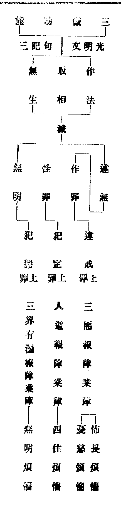
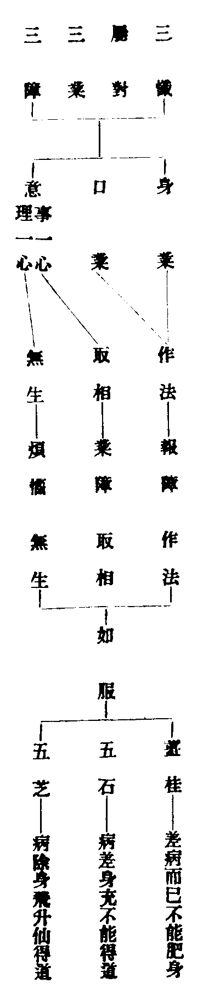
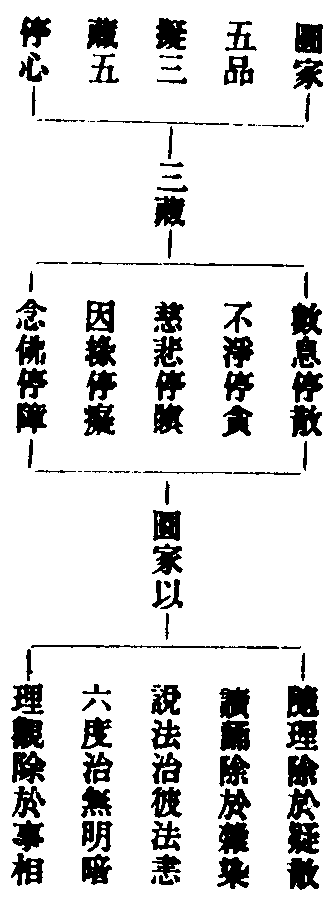
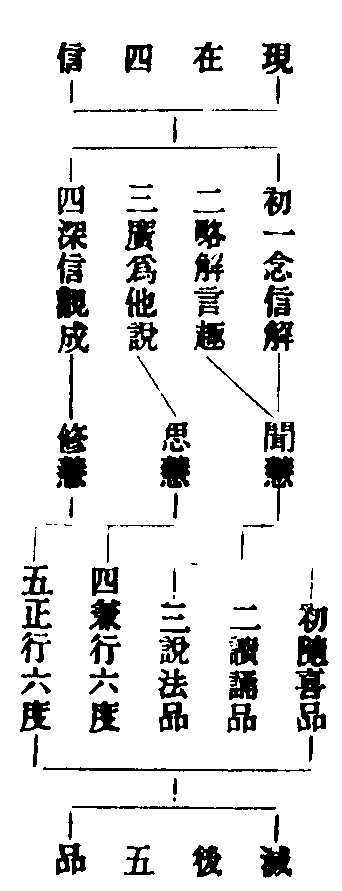
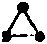
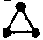

天台四教儀註彚補輔宏記卷九之上
△二依次釋成二。初明凡二。初外凡三。初牒徵。
初五品位者。
△二釋義五。初隨喜品二。初標。
一隨喜品。
△二釋二。初正行二。初引經。
經云。若聞是經。而不毀訾。起隨喜心。
【□註】文句(八)云。隨順事理。無二無別。喜。是慶己慶人。(文)妙樂(十三)云。事理祇是權實異名。了此權實。即非權實。故無二無別。即隨順開權顯實之事理也。言己人者。理有事故。故能慶人。事有理故。故能自慶。又不二而二。故慶己他。二而不二。了非己他。
【■補】此引經文證明隨喜之名也。言若聞是經者。即圓聞迹門開權顯實。本門開迹顯本深奧之法也。而不毀訾者。離誹謗過。起圓信也。起隨喜心者。即妙悟圓理。該羅萬行。所謂具縛凡夫。能知如來秘密之藏。為世間之初依也。註中先引文句。是正釋。次引妙樂。是轉釋。會義云。理者。現前一念心之本性。即是法界實相之體。非本非迹。名為理本。非權非實。名為實理。事者。如來久遠證此妙理。故名為本。從本垂迹。非生現生。非滅現滅等。皆名為事。如此信解。無二無別。名隨如來證此現前一念實相。本迹權實。不可思議。我及眾生。同此心性。亦當得之。故於己人。深信隨喜。故云慶己慶人。慶己。有智慧。慶人。有慈悲也。節義引法華解云。或說己事。或說他事。佛界為己事。九界為他事。然事即理。其理本具九界之事故喜。九界在事之人皆即佛界。為慶人。我今雖解。猶與眾生同在九界之事。然九界全是佛界之理。故自慶。又實有權故。能化他為慶人。權即實故。己即佛身為自慶。對句記內。慶己有智慧。慶人有慈悲句。甚清。
【□註】妙玄五(二)云。若人宿植深厚。或值善知識。或從經卷。圓聞妙理。謂一法一切法。(假)一切法一法。(空)非一非一切。(中)不可思議。起圓信解。一心中具十法界。如一微塵。有大千經卷。欲開此心。而修圓行。圓行者。一行一切行。謂十法成乘。十心成就。其心念念悉與諸波羅密相應。是名圓教初隨喜品(文)。
【■記】此引妙玄似就學人行邊。以釋隨喜也。言宿植深厚者。乃深厚之善根也。顯前四時之善根。不名深厚。唯聞法華。下一乘圓種為深厚。如在大通佛時下種已來。中間或有所得。或無所得等。為宿植深厚也。宿植。是內因。知識。即僧。經卷。即法。此二為外緣。古云。若不往昔修福慧。於此正法不能聞。是人內因既成。外緣又具。故得圓聞妙理也。然則圓聞何等妙理。謂即空而假。即假而空。空假兩非。雙遮二邊。既其雙遮。必也雙照。遮不在前。照不在後。遮照同在一時。不可心思言議。是為圓妙諦理。乃其所聞也。聞已深忍樂欲。起圓信心。信已。起圓妙解。解得根塵相對。一念心中。具足十法界。如一微塵中。具大千經卷。如華嚴性品云。佛子譬如有一經。如大千界。時有人見此經卷在一塵內。即以方便。破塵出經。以譬如來智慧具足。在於眾生身中。為惑所覆。不覺不知。如來觀已而言。云何如來在於身中。而不覺知。我尚教彼覺悟聖道。見如來性是也。然要實其所解。必須剖塵出經。故當開此心。而修圓行。所謂一行一切行。即十法成乘。十心成就。如玄文云。略言為十。謂識一念平等具足。不可思議。傷己昏沉。慈及一切。又知此心。常寂常照。用寂照心。遍破諸法即空假中。又識一心諸心。若通若塞。能於此心具足道品。向菩提路。又解此心正助之法。又識己心及凡聖心。又安心不動不墮。不退不散。雖識一心無量功德。不生染著。如是十心成就已。念念與諸波羅密相應。是為圓行一行一切行也。能如是聞信解行。是為圓隨喜品位。
【■備】有師標云。諸波羅密相應者。即究竟所歸處。以觀行中雖未顯發。已伏五住。任運與彼相應。如義例云。實心緣實境。實緣次第生。實實迭相注。自然入實理。此偈為觀行之髓。當精研之。
△二徵釋二。初徵詰。
問。隨喜何法。
△二答釋三。初總答。
答。妙法。
妙法者。即是心也。
【□註】妙法即是心者。指要鈔上(四)云。今家釋經題法字。約此三法。各具三千。互具互融。方名妙法。然雖諸法。彼彼各具。若為觀體。必須的指心法三千。起信論云。所言法者。謂眾生心。
【■記】經題。指法華三法。即心佛眾生是也。的指心法者。妙玄云。眾生法太廣。佛法太高。於初心為難。但自觀己心。則易也。
【■備】起信下。證法是心。然賢首疏以生滅。不生滅和合為眾生心。今家引以證法的指眾生生滅心。以生滅即不生滅也。
△二示體德。
妙心體具。
【□註】妙心體具者。止觀五(十三)云。一心具十界。一法界又具十法界。十法界具百法界。一界具三十種世間。百法界即具三千種世間。此三千法。在一念心。若無心而已。介爾有心。三千具足。亦不言一心在前。一切法在後。亦不言一切法在前。一心在後。輔行五中(七)云。言無心而已者。顯心不無。言介爾者。謂剎那心。無間相續。未曾斷絕。纔一剎那。三千具足。若具三千。即具三德。又介爾者。介者。弱也。謂細念也。但異無心。三千具足(文)。
【■記】此明心體具足眾德也。言妙心體具者。以根塵相對。一念心起。於十界中必屬一界。即具百界千法。假實國土。於一念中悉皆備足。由理具故。方有事造。故云體具也。三千諸法。即五陰世間一千。國土世間一千。有情世間一千也。謂剎那下。此剎那心。如燈焰焰。似水滔滔。曾無有間。遞相接續。自有識來。至於今日。未曾斷絕也。
【■補】百界千如等。輔行廣明。所以論十如十界三世間者。以不談三諦。顯理不盡。不明十界。攝事不周。若非十如。因果不具。無三世間。依正不備故也。
【■備】止觀九問。一念具十法界。為作念具。為任運具。答。法性自爾。非所作成。如一微塵。具十方分。妙宗云。所言心性具一切法造一切法者。實無能具所具。能造所造。即心是法。即法是心。能造因緣。及所造法。皆當處全心是性。是故今觀若依若正。乃法界心。觀法界境。生於法界依正色心。是為唯依唯正。唯色唯心。唯觀唯境也。問。未起一念時。三千法門在於何處。答。此因就法明具。故約一念論。趣舉一念。皆具一切。若論三千法體。亘古亘今。本自如如。初未嘗以一念有無。而三千法為之增損。如即漚示海。豈以漚之起滅。而謂海之有無也。私謂。無明未破。起信謂以從本來。念念相續。未曾離念。故說無始無明。是念未起時。正屬無記無明。以念細不覺。非離念也。此無記與念起。是對待法。宗門下亦稱為光塌塌地。弗悞認為清淨真如。常住真心也。故止觀中四運以推破之。識得無記是無明細念。三千有無。不待言而自明矣。問。古德言。住地無明即是諸佛不動智。此又如何。答。若了得念起念滅。殺盜淫業悉是諸佛不動智。何說不通。若認無記為真如。錯悞不少。旦了得淫殺等。是不動智。正須調心徹證。以期一生登住。所謂行解相應。名之曰祖。若恃乾慧斷不敵業力也。慎之思之。
△三立喻明。
如如意珠。
【□註】如如意珠。止觀五(十七)云。如如意珠。天上勝寶。狀如芥粟。有大功能。淨妙五欲。七寶琳琅。非內畜非外入。不謀前後。不擇多少。不作麤妙。稱意豐儉。降雨穰穰不添不盡。蓋是色法。尚能如此。況心神靈妙。甯不具一切法耶。(文)記中表法。約理解釋。須者尋之。
【■記】此節從喻約義以發明也。止觀正約事釋。記中又約理釋。記。即輔行。此是略指。今具記之。輔行云。今珠義者。第一義天。天然理體。即勝寶也。性無雜染名淨。無非佛法。名妙。在一剎那。故言芥粟。珠中所雨。不增人欲。生一切願。從希須邊。故名為欲。又理為四弘所緣之境。故名希須。能滿自他菩提妙果。名大功能。七寶者。金銀等寶。不出七故。即譬無作道品。寶炬陀羅尼也。真寶名琳。似寶名琅。真似二寶。皆生於珠。即正助二門。不出於理。非自性故。非內畜。非他性故。非外入。既無自他。亦無共離。從不謀去。有化他用。非縱故。不謀前後。非橫故。不擇多少。任運施為。名不謀。稱機設逗。名不擇。雖五味不同。而秘密不定。故縱而不縱。雖諸教不同。而適時增減。故非多非少。若機若應。並非權非實。故不作麤妙。觸緣斯現。故稱豐儉。多名為豐。少名為儉。益物不窮。故降雨穰穰。穰穰即福也。乃至依正。珠亦雨之。非本無今有。故不添。非本有今無。故不盡。若自若他。皆不出三諦。乃至單銷譬事。意則可見。故直對理。以明體用。珠是色法。世福所感。尚能如是。況復心神不思議境乎。
△二生佛會同。
心佛及眾生。是三無差別。
【□註】心佛眾生三無差別者。釋籤二云。當知三法。即是不思議廣大法界。應了此理。具足佛法及眾生法。雖復具足。心性冥妙。不一不多。又眾生及佛。不出于心。故無差別。名心法妙。是故結歸三無差別。方名為妙。十義書云。以我一念心法。及一切眾生。十方諸佛。各各論於事造。人人說於理具。而皆互具互攝。方名三無差別。又指要云。是則三法各具二造。方無差別。
【■記】此釋三法無差之義。釋籤初句。直示三法即理。應了下。勸了理具不一不多。謂理具生佛。故不一。心性冥妙。故不多。介爾三千。故不一。三千只是一心。故不多。具足佛法。故不一。不離一念。故不多。言心性冥妙者。隨緣不變。名性。即事之理也。不變隨緣。曰心。即理之事也。無諦無形。體一互融。故曰冥妙。以不一故。三法歷然。以不多故。三無差別。又眾生下。約三無差別以明玄文結妙。天台三大部。以三法各有所用。如玄文。多用眾生法妙。文句。多用佛法妙。止觀。多用心法妙。各有妙義列然。以三無差別一句。是結歸三妙。亦可名佛法妙。眾生法妙。心法妙。無不可也。上至諸佛常樂我淨。下至眾生惑業苦道。總不出我現前介爾一心。故但名心法。尚未結妙。須明三無差別。方名為妙。十義書下。引二造義釋。謂心法有理事二造。生法佛法。亦各有理事二造。而心法二造具生佛。生佛攝入心法中。佛法二造具生心。生心攝入佛法中。生法二造具心佛。心佛攝入生法中。而心佛眾生互相攝具。方得名為三無差別也。指要下。引結三法各論具二造。眾生約三世變造論事造。而諸佛約變化所造論事造。三世變造。是九界實造。聖人變化。是佛界權造。別行玄記云。經文先示心造一切。便以此心而例於佛。示佛權造。同心實造。次復以佛而例於生。示眾生實造。同佛權造。權實雖殊。因果暫異。三皆能造一切世間。故得結云方無差別。如輔行云。心造有二種。一約理造。即是具。二約事造。即是變。變造不出三世。三世又三。一過造於現。過現造當。如無始來。及以現在。乃至造于盡未來際。一切諸業。不出十界。百界千如。三千世間。二現造於現即是現在同業所感逐境心變。名之為造。以心有故。一切皆有。以心空故。一切皆空。如世一官。所見不同。是畏是愛。是親是冤。三者聖人變化所造。亦令眾生變心所現。並由理具。力有事用。約心既有二種。經以心例於佛。佛例於生。故言如心佛亦爾。如佛眾生然也。
【■補】指要鈔詳解問。緣生事造。其相易知。理具三千。其相云何。答。理無所存。徧在於事。即此諸法。是理具之相。若爾。以何為事造耶。答。事亦不出此。若爾。二造奚分。答。只一十界。據心而分事理之殊。以由此心有起有具故也。
【■備】十義書。四明所造。金光明玄。有十種三法。大師皆以三觀明之。有廣略二本。失其略本。後之釋者紛紛。皆不約觀。故四明立十種義。以難昭慶講主。故名十義書也。
△二約能隨立妙行三。初標即境即觀。
此心即空即假即中。
【□註】此心即空假中。拾遺記下(八)云。三觀之首。皆言即者。指一念心。即三諦故。言即空者。非即偏空。乃觀一念即圓空也。此空能破三諦相著。故云一空一切空。(三觀。悉彰破相之用也)言即假者。非即偏假。乃觀一念即妙假也。此假能立三諦之法。故云一假一切假。(三觀。悉彰立法之功也)言即中者。非即但中。蓋指一念即具德中。此中能妙三諦之法。故云一中一切中(三觀。悉是絕待之體也)。
【■記】此正釋空假中相即之義也。初句。總釋即字。言即空下。別釋此心即空。初二句。揀兩教偏空。以觀此心即圓空。所謂無假無中無不空也。次此空下三句。示能結名。即拾遺記云。非獨空觀於法破相。假中亦能於法破相。何者。以空破相。即真破俗。以假破相。即俗破真。以中破相。雙遮二邊。此三頓破。名畢竟空也。末句一空一切空者。小註點明。是三觀破相之用也。言即假下。別釋此心即假。初揀兩教偏假。以觀此心即是妙假。所謂無中無空無不假也。次三句。示能結名。即拾遺記云。非獨假觀能立於法。空中二觀。亦能立法。何者。以空立法。即真而俗。以假立法。即俗而真。以中立法。雙照二邊。此三頓立。名為妙假也。末句。小註點明。即假是三觀立法之功也。言即中者下。別釋此心即中。初揀別教但中。以觀此心。即是不但中。所謂無假無空無不中也。次三句。示能結名。即拾遺記云。非獨中觀於法絕待。空假亦能當處絕待。何者。以空中故。真諦絕待。以假中故。俗諦絕待。以中中故。中諦絕待。所謂雙遮雙照。俱絕俱待。此三頓絕。名為圓中。絕待體也。
【■補】既此心即空假中。則終日破相。諸法皆成。終日立法。纖塵必盡。終日絕待。二邊熾然。是為即立即破。即破即立。非破非立。而立而破。說雖次第。行在一時也。又詳解云。若言心空。故三千俱空。心假。故三千俱假。心中。故三千俱中。是名隨德用。若言三諦俱彰蕩相。故云俱破。三諦俱彰立法。故云俱立。三諦俱顯絕待。故俱法界。即體一互融。舉一即三。言三即一。是體互融也。輔行云。三諦無形。俱不可見。然則假法。可寄事辨。即此假法。即空即中。空中二體。二無二也。心性不動。假立中名。亡泯三千。假立空稱。雖亡而存。假立假號。心印記云。以即空故。破染礙情。一相不立。顯此三千同一性故。一切即一。方能同居一念。派之彌合。故如眾珠咸趨一珠。畢竟清淨。非斷無空。以即假故。互具互攝。諸相宛然。顯此三千不失自體。一即一切。雖復同居一念。即之彌分。故如一珠。影入眾珠。不可思議。以即中故。顯此三千非一非一切。非分非合。雙遮二邊。無有二相。雙照二諦。空假宛然。豈同但中不具諸法也。一假一切假者。假觀觀真諦理時。見思破而真諦理顯。假觀觀俗諦理時。塵沙破而俗諦理顯。假觀立中道時。無明破而中道理顯也。一中一切中者。三觀皆中。乃以中觀統真諦時。不惟中諦能統法稱王。即真諦亦復稱王。方其見思染情空則遮有。真諦理空則遮空。真諦理顯則照空。三千明淨則照俗。以中觀觀俗諦時。塵沙染破為遮俗。三千理顯為遮空。即遮俗時照空。即遮空時照俗。以中觀觀中諦時。雙遮雙照。自在稱王。自不必言也。一空一切空。可以例知。又空者推此一念。不自他生等故空。一念既不可得。以一空故。心所生所具一切法皆空也。拾遺記云。若在空前。即生死假。若在空後。即建立假。此生死假。即建立中所治之病。按生死假。即偏假。建立假。即妙假也。
△二明境智俱忘。
常境無相。常智無緣。
【□註】此境智冥一。
【■記】此句總斷境智雙忘。
【■補】光明記云。境是本覺。智是始覺。雖分本始。而是一覺。境智既爾。方曰相冥無二之法。又真常不生滅之境。本來無相。所謂靈源無狀。千差斯泯也。真常不生滅之智。本無所緣。若有所緣。即有能所。有能所則凡聖角立。乃生死之本。今言常智無緣者。是忘能所。離待對。所謂靈光獨露。一道清虗也。又無相者。無生死相。無涅槃相。無相亦無。當體即是實相。稱此真常之境。發無生滅之智。境既無相。智亦無緣。即境即智。緣即無緣。斯稱冥一也。
△三顯境智俱立。
無緣而緣。無非三觀。無相而相。三諦宛然。
【□註】而言境智也。止觀第一常境常智後。復云。以無緣智。緣無相境。以無相境。相無緣智。境智冥一。而言境智。輔行釋云。實相無相。無相亦無。實智無緣。無緣亦絕。何者。境雖無相。常為智緣。智雖無緣。常為境發。智雖緣境。稱境無相。境雖發智。令智無緣。無緣而緣。照境無間。故云以無緣智。緣無相境。無相而相。發智宛然。故云以無相境。相無緣智。
【■記】註文初句總斷境智雙立也。次引止觀。雙證俱亡俱立之意。次引輔行。雙證釋也。謂實相真境。無彼生死涅槃一切境相。即此無相。亦復泯絕。乃真無相境也。實緣真智。無能緣所緣之影。即此無緣。亦復泯絕。乃真無緣智也。斯乃泯絕境智。何者下八句。復明境智互資互泯。斯乃明非斷無之境。枯瘁之智也。無緣下八句。轉承上義。以結釋止觀。即是申明儀文三觀三諦宛然意。
【■補】智緣境者。一切智。照真諦境。道種智。照俗諦境。一切種智。照中諦境。境發智者。真諦。發一切智。俗諦發道種智。中諦發一切種智。又輔行釋意。先有伏疑二番。初番釋無相無緣如何修行疑。疑曰今行人既開妙解。正欲稟圓行進修。今言無相亦無。則無所緣之境。無緣亦絕。則無能緣之智。境智既其俱寂如何令彼進修。而成五品耶。故徵云何者。境雖下。是釋。謂境雖無相。常為智緣。則所緣之境歷然。智雖無緣。常為境發。則能緣之智宛爾。次番釋既能緣發何名無相無緣疑。疑曰。既境為智緣。智為境發。何云無相無緣。故釋云。智雖緣境。稱境無相。謂智本無緣。故能稱境無相也。境雖發智。令智無緣者。謂能發之境本無相。故令所發之智亦復無緣也。是則寂照雙融。智無緣。而三觀昭著。照境無間。境無相。而三諦分明。發智宛然。故曰以無緣智。緣無相境。以無相境。相無緣智。
△三結示。
初心知此。慶己慶人。故名隨喜。
【□註】此結成隨喜也。五品初心。知此妙心體具事理三千境觀之法。慶己有智慧。慶人有慈悲。
【■補】慶己得此智慧。即同佛慧。慶人皆具而在迷。須開觀發明。故有慈悲也。
△二助行三。初兼明正助雙修二。初明內正。
內以三觀。觀三諦境。
【□註】大意云。三諦三觀三非三。三一一三無所寄。諦觀名別體復同。是故能所二非二。
【■記】三諦三觀三非三者。如弄珠人。其珠不在空中。不落地上。不在手裏。既不在三處。又不在一處。不在空。喻不住空。不落地。喻不住假。不在手。喻不住中。既不住三。亦不住一。故成非三非一也。三一一三無所寄者。以三三乎一。一無所寄。以一一乎三。三亦無寄。三一既俱無寄。是非一非三也。若三觀一心。即約縱說。一心三觀。即約橫說。今非縱。故非一。非橫。故非三。三一一三。俱是具心上義也。諦觀名別體同者。以性三為諦。修三為觀。故名別也。妙宗云。性了是真。性緣是俗。性正是中。不是了因。非大真諦。俗中亦然。此之三諦。方與三觀體性不殊。是體同也。末句。觀是能顯。諦是所顯。其實體性非二。是故能所二非二也。
△二明外助。
外以五悔。勤加精進。助成理解。
【□註】止觀七云。唯法華別約六時五悔。重作方便(此約四種三昧相對而說。不可以光明彌陀亦論五悔為妨)。
【■記】外以五悔者。止觀云。若四種三昧。修習方便。通如上說。惟法華別約六時五悔。重作方便。又言心理微密。用觀輕微。黑惡覆障。卒難開曉。重運身口。助發意業。使疾相應。更加五悔。小註惟恐以金光明大彌陀懺俱論五悔為難。是故申明專對四種說也。如輔行云。此明方便來意。四種三昧。通用二十五法為通方便。若行法華。別加五悔。不通餘行。故言唯也。
【■補】圓觀行人。破障顯理。三觀即足。何假五悔助耶。答。止觀云。行人無量劫來善惡諸業。或已受報。或未受報。若平平運心。相則不現。今修止觀。能動諸業善惡相現。故修五悔。破此業障。障去理明。觀行功速。如運舟加以風帆櫓棹。意在此也。
【□註】修懺要旨云。所以悉稱悔者。蓋皆能滅罪故也。勸請。則滅波旬請佛入滅之罪。隨喜。則滅妒他修善之愆。回向。則滅倒求三界之心。發願。則滅修行退志之過。(文)輔行二上(八)云。於法無染曰精。念念趣求曰進。助成理解。一往分之。五悔為事行名助。諦觀為理解名正。
【■記】此節釋外助之正義也。先引要旨。以釋五悔名義。初一悔是總。後四悔是別。次行輔行。略明精進助成二句。一往者。猶言單層而言也。若再往分之。五悔亦有正助。理懺為正。事懺為助。如下文說。
△二正明助行妙懺二。初雙標理事。
言五悔者。有二。一理。二事。
【□註】止觀(二)云。事懺懺苦道。業道。理懺懺煩惱道。理事不出三種懺法。理謂無生妙懺。事謂取相作法。
【■記】懺三道罪障者。瓔珞云。犯沙彌戒乃至比丘戒。若不還生。無有是處。是懺業道之文也。又云。眼耳諸根清淨。是懺苦道之文也。又云。第七日見十方佛聞法。得不退轉。是懺煩惱道之文也。次一句。總示事理三種懺法。末二句。別示可知。
【■補】止觀云。若欲懺悔三道罪障。當識順流十心。明知過失。當運逆流十心。以為對治。此二十心。通為諸懺之本。順逆十心。即大悲懺等本中。內計我人。外加惡友等文是也。
【□註】光明文句三(十四)云。行者應知三種懺法。無生是主。二為助緣。灰汁皂角。助於清水。若缺妙觀。不名大乘。便同外道無益苦行。須近善師學懺悔處。及懺悔法。方可行於道場事儀。故於諸事。皆用妙觀照而導之。使作法等皆順實理。悉為佛因。又云。正助二懺。修逐根緣。自有一向修於正道。直登圓住。或內外凡。自有一向修於助道。如南嶽立有相安樂行。不入三昧。但誦持故。亦能得見上妙色像。此二隨根修入不同。若悟理時。必兩捨也。自有正助相兼而修。或先正後助。或先助後正。或同時而修。今之所立。意在同修耳。
【■記】此示三種懺法正助。初行半。勸知三法正助。以灰汁皂角。喻取相作法為助。以清水。喻無生是正。若缺下。明無正觀成過也。蓋以西域九十五種外道。人人勞形苦心。箇箇曉夜勤修。意欲自成無上道果。而反謂無益苦行者。以其心遊理外。不知妙觀故也。若內教行人。但用取相作法。不修無生正觀。欲求滅罪證果。其猶但用灰汁皂角。不取清水以淨其器。豈不同彼外道無益苦行乎。此指全不知觀者說也。須近下。明用正觀成因。善師。即明眼淨行有道德之師。懺悔處。即是圓妙三諦。懺悔法。即無生。取相。作法。三種懺法學已。方可行於道場事儀也。然諸事皆用妙觀。使順理為因者。如要旨言。妙觀之宗。是大乘主。滅罪如翻大地。草木皆枯。顯德如照澄江。森羅盡現。以此理觀。導於事儀。使一禮一旋。罪消塵劫。一燈一水。福等虗空。是知如是事法。得成佛因。良由無生理觀為主也。已上分示三法正助。又云下。明隨根修行正助。初一句。總示隨根。次一行。別示修正。次二行。別示修助。指如南嶽者。乃略舉文中大概。今具記之。如安樂行義云。安樂行有二種。一無相行。二有相行。無相行者。即是安樂行。一切諸法中。心相寂滅。畢竟不生。故名無相行也。常在一切深妙禪定。行住坐臥。飲食語默。一切威儀。心常定故。此行即正道也。有相行者。是普賢勸發品中。誦法華經散心精進。如是等人。不修禪定。不入三昧。若坐若立若行。一心專念法華文字。精進不臥。如救頭然。是名文字有相行。此行者不顧身命。若行成就。即見普賢金剛色身。乘六牙象王。住其人前。以金剛杵。擬行者眼。障道罪滅。眼根清淨。得見釋迦。及見七佛。復見十方三世諸佛。至心懺悔。在諸佛前。五體投地。起立合掌。得三種陀羅尼門。一者總持陀羅尼。具肉眼天眼菩薩道慧。二者百千萬億旋陀羅尼。具足菩薩道種慧。法眼清淨。三者法音方便陀羅尼。具足菩薩一切種慧。佛眼清淨。是時即得具足一切佛法。或一生修行。即得具足。或二生得。極遲。三生即得。若順身命。貪四事供養。不能勸修。經劫不得。是名有相行也。此二下。結示隨根不同。悟時兩捨者。即所謂過河須用筏。到岸不須舟也。次一行。明正助兼修。有三不同。如文可知。末二句。明今是同修也。
【□註】懺悔名。光明文句中(初)云。懺者。首也。悔者。伏也。不逆為伏。順從為首。又懺名白法。悔名黑法。白法須尚。黑法須捨。又懺名修來。悔名改往。又懺名披陳眾失。悔名斷相續心。又懺者名慚。悔者名愧。慚則慚天。愧則愧人。(文)光明記三(七)云。然懺悔二字。乃雙舉二音。梵語懺摩。華言悔過。以由悔過是首伏等五種之義。今既梵華二音並列。是故大師以首釋懺。以伏釋悔。乃至慚愧。對釋懺悔。欲令稟者。修首伏行。及慚愧等。斯是善巧說法之相。故不可以華梵詁訓而為責也(文)。
【■記】此示懺悔名之正義也。先引光明文句。釋十番名總五義也。初四句。約首伏釋。但是略引。具足應云懺者。首也。悔者伏也。如世人得罪於王。伏款順從。不敢違逆。不逆為伏。順從為首。行人亦爾。伏三寶足下。正順道理。不敢作非。故名懺悔。此自陳罪也。次四句。約黑白釋。懺名白法。悔名黑法。謂黑法須悔而弗作。白法須企而尚之。此以取捨合論言懺悔也。三二句約棄求釋。懺名修來。悔名改往。謂往日所作惡法。鄙而惡之。故名為悔。往日所棄善法。從今已去。誓願勤修。故名為懺。此以棄往求來云懺悔也。四二句約露斷釋。謂懺名披陳眾失。發露所作過咎。不敢隱諱。悔名斷相續造業之心。厭悔捨離。此能作所作合棄稱懺悔也。五四句。約慚愧釋。謂懺者名慚。悔者名愧。慚者慚天。愧者愧人。人見其顯。天見其冥。冥細而顯麤。麤細皆惡。故懺悔也。此下釋懺悔。乃分人天。及以四教事理之別也。上約人天釋。次人是賢人。天是聖人。不逮聖賢之流。故懺悔也。此約三藏教中賢聖而釋也。次聖賢俱人。天是第一義天。第一義天是理。賢聖是事。不逮事理。俱懺悔也。此約三藏教中事理而釋也。次慚三乘之聖天。愧三乘之賢人。不逮此天人。故名慚愧。慚愧云懺悔也。此約通教中初賢聖而釋。但此教中菩薩同二乘斷惑。故三乘皆聖也。次三乘賢聖尚非菩薩之賢。況菩薩之聖。今慚愧三十心之賢。十地之聖。總此賢聖皆是人。第一義理名為天。約此人天論慚愧。以但中為第一義天。不逮此人天。故慚愧懺悔。此約別教賢聖人天而釋也。次三十心去。自判聖人。十信是賢人。約此賢聖論慚愧懺悔。總此賢聖皆是人。第一義理名為天。約此人天論慚愧懺悔。以具德中為第一義天。不逮此人天。自生慚愧名懺悔。此約圓教聖賢人天而釋也。已上重重疊疊。皆釋懺悔名也。次引記約五義釋名之意。初一行。示華梵雙舉。次二句。明悔過五義。今既下正示以五義釋名。斯是下。讚天台巧釋。以遮外責。蓋由義淨法師。譯懺摩是西音。乃忍義。西國人。誤觸身云懺摩。意是請恕。願弗嗔責。此方誤傳久矣。難可改張。應法師云。懺。訛略也。書無懺字。正言叉摩。此翻求忍。意謂容恕我罪也。天台釋光明懺悔品。不辨華梵。但直云。懺者首也。悔者伏也。故此讚其巧釋。以遮其不辨華梵之責也。義淨。是翻譯名義之集主法師。
【□註】懺悔處。光明文句引普賢觀。是名大懺悔。約中道為處也。名莊嚴懺悔。約俗為處也。名無相懺悔。約空為處也。若三種差別者。此是歷別論處爾。即一而三。即三而一。此圓妙懺悔也。記云。若於三諦歷別而解。乃次第觀。非今妙觀。其妙觀者。空即三諦。假中亦然。名即一而三。三諦俱空。假中亦然。名即三而一。行者應知三一相即。為彰懺悔處。絕乎思議。若以此語。增於言想。則永不識懺悔處也。然懺悔處。誰人不具。何法暫非。但為本迷。滿目不見。全心不知。是故經云。於十力前。不識諸佛。勸求覔者。須親善師。須資妙教。勤聽勤聞。審讀審思。若其然者。必於能詮。識所詮體。翛然慮外。無以狀名。斯乃所求法性道理。此理至妙。為懺法所依。故名為處。若依此處而立行門。方得名為大乘懺也。又懺之所依。如器淳樸。非砧不成。以何為砧。謂一實相。無別實相。即罪相是。得此處者。罪無不滅德無不顯(文)。
【■記】此明懺悔處之所以也。先舉光明文句。明三諦為處。所引普賢觀文云。一切業障海。皆從妄想生。若欲懺悔者。端坐念實相。眾罪如霜露。慧日能消除。我心自空。罪福無主。是名大懺悔。是名莊嚴懺悔。是名無相懺悔也。以大懺悔名中道為處者。蓋謂此大懺悔體。非中非外。橫該一切處。無去無來。豎窮一切時。不動二邊。居然中正故也。即大師云。所觀之罪。非復是罪。罪即實相。所觀之福。福非是福。福亦實相。當體絕待。名為中也。以莊嚴懺悔名俗諦為處者。性具功德。莊嚴自性。以妙境為所莊嚴。以妙智為能莊嚴。境智宛然。即名為俗。則彰恒沙功德故也。以無相懺悔名真諦為處者。以空無相。則泯一切罪相故也。次半行。對別顯圓懺悔處。非縱非橫。不可思議也。次引記釋上懺悔處。文出第六卷。初三句。揀非次第。其妙觀下。示圓三觀。行者下。勸知。然隔歷而論。使成別教。今圓妙懺悔處者。謂此妙觀。若確是三法。確是一法。均可心思言議。今者即一而三。即三而一。非三非一。而一而三。言語道斷。心行處滅。是名絕思絕議圓妙三諦為處也。苟或於三一相即語上。加以奇文註釋。玄思默契。識此法而懺悔者。最上最妙懺悔處也。然依解起行。方得止觀氣分。若徒增言想。與道遠矣。故云永不識也。然懺悔處下二行。責人全具全迷。謂情與無情。莫不具有此理。故云誰人不具。若如是。事理二懺。何法暫非。奈何長劫用理。長劫不知。故云但為本迷。無始已來。無明用事。而業識茫茫。六塵奔駛。是故滿目不見。全心不知。故懺悔品云。於十力前不識諸佛。文句云。諸十力前者。正懺悔煩惱障。獨頭無明。癡倒殊甚。不識法身佛也。法身遍在一切處。癡暗不知。故於佛前造作眾罪。如牛羊不識天子。鳥雀不識檠像。於前造過。愚癡不識法身。亦復如是。勸求覔下。勸求處起行。善師。即有解行之師。僧寶也。僧能指迷成解。故須親之。妙教。即佛所說經教。法寶也。法能滅暗發明。故須資之。勤聽勤聞。即所謂進而問道於師。乃生聞慧。審讀審問。即所謂退而修道於己。乃生思慧。若能如是聞思。必當依指見月。依筌得魚。依能詮之教。識所詮之體。了知此體。翛然逈出思慮之外。亦無形狀可得而名焉。是乃所求法性道理。此理至妙。離四句。絕百非。不可以名名。不可以識識。既為懺法所依。則於無名中。強而名之曰懺悔處。若我等能依此處而立行門。是乃從性起修。全修在性。所修懺法。方得名為大乘懺也。又懺之下。明依處起行之益。初二句。約喻顯。言淳樸者。本以古質為淳樸。今以未治為淳樸。治之令其成器。故云非砧不成。砧。磓鍊也。次四句。徵釋法砧。謂罪相本無。即是實相。此陳過罪。求哀懺悔。故名作法懺也。然作法懺。通大小乘。小乘懺者。如毗尼中。發露與學。二十僧中。行摩那埵。或半月作法。或對首作法。或責心。但令作法成就。不障僧事。即清淨也。阿含中亦有作法。犯欲人。作毒蛇口想。此觀成時。淫罪即滅。亦有觀空懺。只是真空也。大乘懺者。或百八日。虗空藏墮廁是。或九十日。般舟三昧是也。或四十九日。大悲懺是也。或二十一日法華。或七日方等皆是也。灰湯等淨身。辛酒禁口。慙愧勤心。旋繞各有遍數等。皆作法攝也。取相者。謂定心運想。取相現起為期。於道場中。或見佛來摩頂。或見光現。或見華飛。或夢中見諸瑞相。或聞空中聲。於此諸相。隨獲一種。罪即消滅。是名取相懺。如方等求十二夢王菩薩等。雖不正明作法。兼得事用也。無生者。謂端坐念實相。如日照霜露。觀空緣理。無相最上。謂了我心自空罪福無主者。記云。心性本來即空假中離三惑染。名為自空。十界罪福。二義叵得。誰為主宰。如斯體達。是無生懺。又一切罪業。皆從一念不了心生。一實相為懺悔砧也。末三句。結能滅罪顯德。意明行人得此處而立行。自然德日益。而罪日損者矣。蓋由此處高出一切諸處。如大經云譬如有人。入大海浴。當知是人。已用一切諸河之水。大品云。譬如負債人。依投於王。債主反更供養。何敢就其覔物。書云。如墻頭芬。非其莖葉獨能高長。得所依處高故也。行人若依法性為懺悔處。既能高出一切諸處。是故得之者。罪無不滅。德無不顯也。
【□註】懺悔法。要旨云。一作法懺。謂身口所作。一切法度。二取相懺。謂定心運想。相起為期。三無生懺。謂了我心自空。罪福無主。觀業實相。見罪本源。法界圓融。真如清淨。法雖三種。行在一時。光明記云。此三種懺。同時而修。無生是正。二是助緣。斯乃正助一合而行。如膏益明。證理彌速也。又須了知。大乘三懺。後一雖可獨修。不進須假前二。前二不可暫離無生。得此意已。方可說行三種懺法。
【■記】此明懺悔法。先舉要旨列釋三種。言作法懺者。謂身禮拜。口稱唱。意思惟。三業所作。一依法度。披若了我心。本自空寂。則罪福無主。而一切法皆悉寂滅。罪從何生。名無生懺也。觀業實相。見罪本源者。蓋見愛業報。全體即是性惡法門。如富豪人。七寶盈家。凡夫生盲。動轉罣礙。為寶所傷。二乘熱病。見是鬼虎。避走遠去。圓人之眼。不盲不病。明見是寶。體達修惡。即是性惡。故云觀業即是實相。能見罪之本源也。由性修融通。隨緣不變。全修惡即是性惡。故云法界圓融。真如清淨也。此無生懺。雖不正明作事。亦必兼上二懺也。光明記下。證明三種同時而修。以膏喻助。以明喻正。無生正觀。得作法取相助成。其觀照之智愈朗。證妙理於剎那之間也。正如膏油以助燈火。其明益熾。霎時間可以成熟一切也。又須下。勸了大乘三懺。如要旨云。法雖三種。行在一時。甯可缺於前前。不可虧於後後。無生最要。取相尚寬。蓋妙觀之宗。是大乘之主。以理觀導於事儀。則一禮一旋。罪消塵劫。一燈一水。福等虗空。故曰說六根罪時。心存三種懺法也。

【■記】光明文句中。初約遮性罪。作法懺成。違無作罪雖云滅。而性罪依然不滅。如犯殺生。作法懺成。但是違無作罪雖除去。而償命猶在。記云。無作罪者。昔受佛戒。由作法故。發無作體。若毀犯者。得違逆罪。今由作法。翻破此罪也。取相懺。能滅性罪。性罪若去。違無作罪亦去。如伐樹。而枝葉萎。根本未去。續生如故。記云性罪者。十惡也。不論受與不受。犯之性自是罪也。大論云。斬草殺畜。二罪同懺。二種違制之罪俱除。而殺畜償命猶存。由以定心。想成勝相。熏修力強。能轉惡業。是故能滅性遮二罪也。觀無生。能滅無明。如覆大地枝葉等。悉盡無餘。記云。枝葉。喻性遮罪。根本。喻無明心也。二。約三學釋。文句云。作法。滅違戒上罪。記云。作法本為防非。故滅戒上罪也。取相。滅定上罪。記云。取相不心專意。故滅定上罪也。無生。滅犯慧上罪。記云。無生觀照。故滅慧上罪也。以事非。是戒家罪故。作事防非。曰事非。散亂。是定家罪故。惑暗。是慧家罪故。三。除三報釋。文句云。作法。滅三惡道報障。記云。六道雖俱報障。而有苦樂不同。三惡唯苦。違法而得。故作法除之。取相。滅人道報障。記云。人道之報。半苦半樂。散善所招。故取相懺。乃能滅之。無生滅三界有漏報障。記云。三界天報。望人皆定。無苦唯樂。三漏所感。故無生懺。乃能滅之也。四別煩惱釋者。文句云。作法滅怖畏憂愁煩惱。亦是破煩惱。記云。二番唯大釋。前之四番。前通大小乘。無生惑滅。未簡通別。作法。或取毗尼之制。今之二釋。無生。的破障中無明。通惑不生。為今取相。驗知此去。唯就大釋。別煩惱釋者。怖畏屬思。憂愁屬見。今作法懺成。位在五品。能伏此惑。指伏為破。故云亦破煩惱也。取相能滅四住之煩惱。記云。取相懺成。位在七信。故滅四住。既見真諦。望中名相。故名取相也。無生懺成。滅無明之煩惱。記云。無生觀成。位登初住。所除的在根本無明也。故知此釋。別就大乘明三種懺也。

【■記】記云次明生善。乃約喻顯。五石。治病之藥石也。即白瑛。紫瑛。石膏。鐘乳。石脂。是也。五芝者即五色靈芝也。是輕身之仙草。薑桂。喻小乘作法。未生大善。若大乘作法。生善非少。五石五芝。通喻大小兩乘生事理善也。
【■補】光句云。又三種懺。共除報障。取相。除業障。無生。除煩惱障。記云。三通三障釋。言共除報障者。此乃現報父母生身。得六根轉報。實在正助合行。若但理觀。雖入真似。亦有不得六根淨者。故言三懺共除報障也。取相除業障者。約出假說。能扶宿世無量業種。作度生緣。業不能障。於業自在。名除業障。以其未是真出假位。故見俗諦。名取相也。無生。除煩惱惑。其義可知。
△二雙釋理事二。初明理懺。
理懺者。若欲懺悔者。端坐念實相。眾罪如霜露。慧日能消除。即此義也。
【□註】光明記三(八)云。端坐者。身儀也。禪波羅密具出坐法。須者宜檢。念實相者。懺罪觀也。實相無相。當云何念。必以無念之念。念無相之相。以無相之相。相無念之念。若於念外別有實相。實相之外別有於念。則非此經念實相也。眾罪等者。滅罪所以也。前念實相。蓋體修惡即是性惡。性惡照明。斯為慧日。修惡體虗。如消霜露(文)。
【■補】端坐。解見十卷。念無相之相者。觀慧現前。萬法皆如。相無念之念者。慧日高懸。能消諸暗。仁王云。說智及智處。皆名為般若。皆名為實相。四明云。處即實相。智是般若。能觀之智。與所觀之處。同是般若。智外無如也。二皆實相。境外無智也。境智雙冥。其狀如是。又了惑即般若。故言性惡照明。光明記云。以無念念。念罪實相。念與實相。能所名別。其體不二。如是念之。罪相既亡。實相亦泯。此慧如日。消罪如霜露也。體修惡即性惡者。修惡。即事造九界煩惱。性惡。即理具九界法門。全性惡起修惡。故體修惡即性惡也。
△二明事懺二。初正明五。初懺悔二。初正釋三。初法二。初滅惡。
言事懺者。晝夜六時。三業清淨。對於尊像。披陳過罪。無始已來。至於今身。凡所造作。殺父。殺母。殺阿羅漢。破和合僧。出佛身血。邪淫偷盜。妄言綺語。兩舌惡口。貪瞋癡等。如是五逆十惡。及餘一切。隨意發露更不覆藏。畢故不造新。
【□註】晝夜六時等四句。明首伏法。殺父下。明五逆罪。殺。音弒。下殺上也。妙樂八引俱舍云。五並業障攝。約處人除北。約人除扇[打-丁+虎]。(此云黃門勅佳反)四身一語業。三殺一處誑。一殺生加行。(出佛身血)無間一劫熟。隨罪增苦增。八比丘分二。(破僧)以為所破僧。具如補注九(五)釋。
【■記】此示五逆並業障攝也。唐譯俱舍第十七卷十二。明三障何處有中云。三障有無間。非餘扇[打-丁+虎]等。少恩少羞耻。餘障通五趣。長行云。且無間業。唯人三洲。非北俱盧餘趣餘界。又三洲內。唯女及男造無間業。非扇[打-丁+虎]等。所以者何。即前所說。彼無斷善不律儀。即是此中無逆之所以也。[打-丁+虎]。與差同。翻譯名義云。扇[打-丁+虎]。或云扇茶。此云生。言天然而生。男根不滿也。有言。北洲。黃門。二種。於父母念子。少於恩愛之心無重恩故。縱使殺之。非無間受苦也。四身一語業等者。俱舍云。五無間中。四身業。一語業。三是殺生。一虗誑語。根本業道。一是殺生業道加行。如行。即方便也。以如來不可害故。破僧無間。是虗誑語。何緣名破僧。因受果名。或能破故無間一劫熟等者。明破僧果熟時處。論云。此必無間大地獄中。經一中劫。受極重苦。餘業不必生於無間。若多作業罪。皆於次生熟。如何多業同感一生。隨彼罪增。苦還增劇。謂由多逆。感地獄中大柔軟身多猛苦具。受二三四五倍重苦也。八比丘分二等者。俱舍云。唯破羯磨僧。通三洲八等。論云。要八苾蒭分為二眾。以為所破。又云。唯破羯磨。通在三洲極少八人。多亦無限。通三洲者。有聖教故。要一界中。僧分二部。別作羯磨。故須八人。過此無遮故亦言等。五分律云。要於界內八比丘以上。分作二部別行僧事。乃名為破。是中作主者。一劫墮大地獄不可救。有師標云。北洲無佛羅漢僧。又不識父母。無殺逆事。以除之。扇[打-丁+虎]縱殺父母。思幼時割棄。父母無恩。故亦除之。殺生加行者。凡殺盜淫等業。於一業中。具有三種。一加行。二根本。三後起。且以三業論之。如未殺前。備殺生之具。或至綑打出血。但未盡命。名加行罪。若斷命根。名根本罪。斷命之後。或稱量而賣。及殺已埋棄等。均後起業也。八比丘分二者。以在一處羯磨同修。或至得果。今誑言哄至他處。致果不得成。故約果論因。其罪重矣。罪增苦增者。造一逆。當一劫。若至五逆。則有五劫也。翻譯名義云。般吒。翻黃門。扇[打-丁+虎]。翻生。與原註有異。然此似指黃門說。以父母少愛。故殺非無間業。若造餘三業。即黃門亦當同報。
【□註】光明文句中(三)云。人從父母稟身。十月懷抱。三年鞠養。撫念惟惟。始能升頭戴髮。教方教數。始解作人。那忽違恩背義。而行弒逆。天雖大。不覆此人。地雖厚。不載此人。此人命終直入地獄(文)。
【■記】此別示為父母而行弒。天地之不能容其受生。故須入地獄也。謂人生天地之間。莫不從父母以稟其身。然人稟父母有身。而母恩尤為重也。何者。如古云。懷躭十月居娘腹。乳哺三年費苦心。痘瘖固然驚破膽。些須小病亦勞神。可見母恩最重也。撫。拍也。惟惟。憐子專切之意。教方教數。是禮記篇名。則云六年數之數與方名。數者一十百云萬億也。方者。東西南北上下也。是則父母為子。廢寢忘餐。唯欲長大成人。榮宗耀祖。若為子者。不念劬勞之德。全違恩義之心。乃以父母邊。而加之白刃。豈天地所覆載乎。是故命終。直入地獄更何疑焉。
【□註】十惡中應明殺生。釋十惡名。如法界次第上(九)云云。口有四惡。或云五者。加無義語。
【■記】此明十惡也。初二句。出文說略殺生一惡。次二句。指釋十惡之文。言十惡中首即殺生。儀文脫略。故云應明。法界云。一殺生。斷一切眾生物命。二偷盜。盜他財物。三邪淫。於非妻妾而行欲。四妄言。以言誑他。五兩舌。鬬搆之言間他。致令得失分乖。六惡口。惡言加被。令他受惱。七綺語。綺側語辭。言乖道理。八貪欲。引取順情塵境。心無厭足。九瞋恚。若對違境。心生忿怒。十邪見。撥正因果。僻信邪教。次應出四重。五逆。七逆。謗方等經。用僧鬘物。作闡提行。乃至十六惡律儀等。諸輕重業科目。皆從十惡中離合。分別其麤細而說者。今欲論諸入道要門。故此並具明也。末三句。明口業之惡。或四或五。諸家開合之不同耳。
【□註】發露者。要旨四云。罪根宜露。則眾罪皆滅。(文)若不發露。犯覆藏罪。如律中說。
【■記】要旨云。懺悔者。謂發露眾罪也。何故爾耶。如草木之根。露之則枯。覆之則茂。故善根宜覆。眾善皆生。惡根宜露眾罪皆滅。如戒本云。若有罪。當懺悔。懺悔。則安樂。次明不露犯罪。戒本云。不懺悔。罪益深。莫輕小罪以為無殃水滴雖微。漸盈大器。末句指治覆藏。準光記云。對治有四法。一。治覆藏情過。謂梵云波利婆沙。此云覆藏。或言別住。謂別住一房。不與眾僧同處。設入眾中。不談不答。行此法者。須滿一百日。不憶元覆藏日數故。乃以百日為限。二。治覆藏罪。謂犯已覆藏。得吉羅之罪。不覆藏。得僧殘。若覆藏者。先懺吉罪。後與別住。三。治僧殘情過罪。謂六夜行摩那埵。此云善喜。前但自意歡喜。此亦使眾僧歡喜。由前喜故。與其少日。即六夜也。故云意喜。僧眾歎曰。此人改悔成清淨。故僧眾喜也。四。治僧殘。謂二十僧中。白四羯磨出罪。然覆藏不經明相。直行摩那埵。然後入眾出罪。或半月作法者。謂行別住時。每至半月說戒。須白眾僧云。我犯僧殘。對首作法者。懺重吉也。責心者。懺輕吉也。摩夷論云。故作者。對首一說。悞作者。責心而悔也。
【□註】畢故不造新者。斷相續心也。已作之罪。願乞消滅。未起之惡。更不敢造。
【■記】言畢故者。懺其前愆也。不造新者。悔其後過也。
△二生善。
若如是。則外障漸除。內觀增明。
【□註】若如是等者。光明文句中云。若純用正懺。亦不須助。若正道暗昧不明了者。修助以助之。所謂灰汁。澡豆。皂莢。木槵。以助清水爾(文)。
【■記】此明正助兼修。是故生善獲益也。言外障漸除者。助道之功也。內觀增明者。正修之力也。前明正助。內以三觀為正。外以五悔為助。今此即懺悔一法。而分正助之殊。謂無生理懺為正。作法等事懺為助也。若於五逆十惡等罪。過去業根既深。今生難以頓拔。是故正道暗昧。不得速成。故須修助以助之。所謂下。引喻發明助道之能也。
△二喻。
如順流舟。更加擄掉。豈不速疾到於所止。
【□註】如順流舟等者。光明文句記三(十二)云。正解如順水。正觀如順風。可喻正道能趨妙理。篙棹。可喻旋禮等善。助於風水。舟豈不疾(文)。
【■記】此節立喻顯明。如文可見。
△三合。
【■記】此節舉法合譬也。謂以旋禮之櫓棹。助於觀解之風水。則正道之舟。剎那而至彼岸。可謂運力於一時。成功於頃刻也。
△二斥非二。初總斥。
莫見此說。便謂漸行。謂圓頓無如是行。謬之甚矣。
【□註】此斥偏執理性無修證者。謂即心是佛。若加修習。則成漸次。非圓頓行。輔行七下(十八)云。圓教位次者。先明五悔。為入位之方。他人圓修都無此意。將何以為造行之始。但云一念即是如來。空談法界。委檢心行。全無毫微(文)。
【■記】此釋斥執也。初句。總明斥執。次四句。出能執情。輔行下。明圓融行以斥偏執。意謂此偏執理性之人。但有言說。都無實義。所謂聽其言也。超乎三賢十聖之前。撿其行也。落於盲龜跛鱉之後。欲誰欺耶。是故言過于行者。君子耻之。
△二別斥二。初明無因有果斥。
何處天然彌勒。自然釋迦。
輔行七下(二十二)引彌勒問經云。彌勒昔行菩薩道時。但晝夜六時勤修五悔。而得菩提(文)。
【■記】彌勒問經云。佛告阿難。彌勒往昔不修苦行。但修善巧方便安樂之道。積習無上正等菩提。阿難言。云何名為善巧方便。佛言。彌勒昔行菩薩道時。但晝夜六時勤修五悔。而得菩提。輔行云。彼經悔文有三十二行。亦無別列五悔辭句。但數數請佛。數數說悔。餘三亦然。如言有罪悉懺悔。是福皆隨喜。我今請諸佛。願成無上智是也。
【□註】彌勒釋迦既是果人。由因克故。非天然等也。
【□註】謂今天台建立解行。了修即性。全性起修。正助兼行。從因至果。故清涼國師云。撮台衡三觀之玄趣。使教合忘言之旨。心同諸佛之心。不假更看他面。
【■記】此示台宗建立解行之妙也。且如止觀一書。要在解行。解則解於諸法本真。行則立行定境修觀。故十章中。前六章以生妙解。第七方便正修。是為所建解行也。今言了修即性者。解也。全性起修者。行也。如十不二門云。性雖本爾。藉智起修。由修照性。由性發修。指要鈔云。性雖具足。全體在迷。必藉妙智解了。發起圓修。故言性雖本爾。藉智起修。由此智行。方能徹照性德。而此智行。復由性德全體而發。若非性發。不能照性。若非徹照。性無由顯。故由修照性。由性發修。是知了修即性。全性起修。即圓解行。而行有正有助。或先正後助。或先助後正。今者正助兼行。正觀圓理。事行相助。如順流舟。更加櫓棹。豈不從因至果到於妙覺彼岸耶。故清涼下。指賢宗巧用今家解行妙義。以淘南北二宗之禪說也。台。即天台。指智者大師。衡。即衡嶽。指思大師。皆宗三觀玄趣。而疏文撮以釋經。言三觀玄趣者。大懺悔。以中為趣。莊嚴以俗為趣。罪福無主。以空為趣。名為玄妙之趣也。使教合忘言旨者。言教契于佛心也。心同諸佛之心者。禪心合于教意也。不假更看他面者。瑜伽云。不觀他面。不看他口。於此正法毗奈耶中。一切他論所不能轉。意云既自通達。不隨他語。亦不看他顏面。別覔一句一偈。謂是忘機之法門。以依法不依人故也。
△二舉謬執能所斥二。初舉謬計二。初計所執法。
若纔聞生死即涅槃。煩惱即菩提。即心是佛。不動便到不伽修習。便成正覺者。
【□註】舉所執之法。須知理雖平等。事有迷悟。何得便謂即是。不加修習。凡言即者。以顯於離。如冰不離水。理須融冰。義同於離。
【■記】此節勸知事理有離即之旨。古德云。眾生即迷中諸佛。諸佛是覺悟眾生。則迷昧凡夫。望覺悟聖人。霄壞難以喻其高低。何得便謂無修無證。儼然古佛耶。又復當知。見凡即之一字。以顯離義。假如池中之冰。不離池中之水。是為即義。若欲成水。理須融冰。是為離義也。故曰識冰池原是水。賴陽氣以消融。悟自心即是佛。假觀行以修成。烏可妄執耶。
△二計能執情。
十方世界盡是淨土。觸向對面無非覺者。
【□註】十方世界盡是淨土。此是依報論即。觸向對面無非覺者。此是正報論即。謂三土皆即寂光。九界無非佛界。理實如然。非修莫克。故即云。
【■記】此明能執之情計不亡。所謂執藥成病也。若云當人本有。妙性天然。離諸名相。本來無有世界眾生。則何依何正。何覺何迷。如是說十方世界盡是淨土者。早是穢矣。觸向對面無非覺者者。迷之久也。何者。因聞相即之語。便計即為究竟。雖祛於腥。則又附於羶矣。淨何甞真淨。覺豈是真覺。縱謂三土即寂光。九界是佛界。亦是如理之談。又何能以清淨法身。而於常寂光中得大受用耶。故云非修莫克。言其理雖如是。當須依理起行。依行入證。若非造修。莫能克證得也。故即云者。即指下節連屬之文也。
△二約教斥二。初判屬理即二。初明有體。
今雖然即佛。此是理即。
【□註】妙安上(十三)云。然理即佛。貶之極也。以其全乏解行證即。但有理性。自爾即也(文)。
【■記】此正明理即。但有其體也。引妙宗者。以釋理即之所以也。眾生即佛。從因至果。其義有六。所謂理即佛。乃至究竟即佛也。今但言理即者。貶斥之極也。以其全缺名字之解即。觀行相似之行即。分證滿證之證即。後之五即絕分。但有前之理性而稱即也。言貶之極者。具有二意。一者。當人妙心。體具三千性相。百界千如。心佛眾生。三無差別。當體即是如來藏性。凡愚不知。自生退屈。高堆聖境。不達本具如來藏性。為說理即佛者。令其不生退屈故也。以其乏後五即。故云為貶極也。二者外道邪見。少有薄解。自生滿足。莾蕩撥無。為說理即佛者。以其全然具縛。乏後五位。是故謂之貶極也。
△二明無用。
亦是素法身。無其莊嚴。何關修證者也。
【□註】無緣了功德莊嚴。法身體素。天龍之所忽劣。
【■記】此正明但有其體。而無其用也。蓋佛乃兩足至尊。故令天龍恭敬。八部圍繞。今言理即者。但有正因理心。全無了因慧心。緣因善心。無慧心。則無智慧莊嚴。無善心。則無福德莊嚴。無智慧。不能說法。無福德。不有相好。又無智慧。則無報身。無福德。則無應身。既無福慧二嚴。又缺報應二身。雖云理即是一素法身佛而已。由是天龍之所忽劣焉。
△二重斥所計。
我等愚輩。纔聞即空。便廢修行。不知即之所由。鼠唧鳥空。廣在經論。尋之思之。
【□註】重斥所計。鼠唧鳥空者。止觀八(七)云。諸位全無。謬謂即是。猶如鼠唧。若言空空。如空鳥空。(文)輔行八上(十一)云。一達諦理。謬說即名。何異怪鼠作唧唧聲。即聲無旨。濫擬生死即是涅槃。亦如怪鳥作空空聲。豈得濫同重空三昧。(文)此斥執理廢行之者。所謂即之所由。意開妙解。而立妙行。行可廢乎。
【■記】此正斥執理廢事。知文不達義之愚也。言我等纔聞等者。是引己斥人意。所謂責人須責己也。鼠唧鳥空者。喻顯不達義之愚類此。註中初句是斷文意。次句。是標辭。引止觀。是正釋。引輔行。是重釋。言鼠唧者。有一類鼠。常作唧唧之聲。全無即之妙旨。以況計執之徒。妄計理即為妙。而不了即之所以妙也。鳥空者。有一類鳥。常於空中作空空聲。雖謂空空。豈得濫同重空三昧之空空耶。此斥下。玉師發明。初句。明上二釋文意。所謂下。明即所由。意謂開解立行。如有目而有足。目足兼資。寶所得到。而行豈可偏廢乎。
【■補】重空者。以我我所不可得。名之曰空。并此空體亦不存。故曰空空。釋懺悔竟。
△二勸請。
二勸請者。勸請十方諸如來。留身久住濟含識。
【□註】輔行七下(十九)云。大為二意。一者。請住於世。二者。請轉法輪。
【■記】此明勸請之意有二也。其第一者。即所謂諸佛若欲示涅槃。我悉至誠而勸請。惟願久住剎塵劫。利樂一切諸眾生是也。其第二者。十方所有世間燈。最初成就菩提者。我今一切皆勸請。轉於無上妙法輪是也。
【■補】止觀云。勸請者。名為祈求。聲聞自度。直讖己罪。菩薩愍眾行道。故須勸請。我今知罪。尚不得脫。眾生不知。歷劫流轉。我無力救。請十方佛。佛憫眾生。不簡巨細。必冀從願。
【□註】大論十五問。諸佛之法。法應說法。何須勸請。又若諸佛現見在前。請佛可爾。今乃不見。云何可請。答。佛雖必說而不待請。請者得福。何得不請。復次佛法應須待請為說。又眾生雖不面見諸佛。諸佛何嘗不見其心。聞其所請。假令諸佛不聞不見。請亦得福。何況聞見而無益耶。
【■記】此引大論料簡問意而有二也。初問諸佛法爾說法。何必待請。二問眾生不見諸佛。請之何為。答。中亦二。先答初問復二。一為請者得福。猶如大王。雖多美膳。若有請者。必得恩福。錄其心故。是故有益故當請。二為佛法待請方說故當請。次答二問。亦復有二。一為諸佛能聞其請故當請。二為佛縱不見。請亦得福。故當請也。釋勸請竟。
△三隨喜。
三隨喜者。隨喜稱讚諸善根。
【□註】輔行七下(二十)云。佛轉法輪。眾生得三益。我助彼喜者。喜前勸請也。過去下種。現在重聞。得成熟益。未曾下種。現在成種。未來方益。故三世益。皆因法輪。故我隨喜眾生得益。要旨云。隨他修善。喜他得成(文)。
【■記】此釋隨喜他人之益成也。初四句。標釋三益而喜。次六句。正釋三益所以。言三益者。即種熟脫之三益也。如過去下種。現在成熟。未來解脫。現在下種。未來成熟。未來未來解脫。蓋大勢威猛。三世益物。故法輪轉處。能令眾生得三益也。次四句。結釋。要旨下。證釋也。
【■補】隨喜者。十方一切諸眾生。二乘有學及無學。一切如來與菩薩。所有功德皆隨喜。問。隨喜有何功德。大論云。譬如妙香。一賣一買。傍人在邊。亦得香氣。於香無損。二主無失。止觀云。能化。受化。及隨喜者。三善均等。觀眾生惑。甚可悲傷。觀眾生善。應大恭敬。此中隨喜。是慶彼。止觀云。法華隨喜法。大品隨喜人。人法互舉耳。釋隨喜竟。
△四回向。
四回向者所有稱讚善。盡回向菩提。
【□註】止觀七(三十)云迴眾生。向菩提。一切賢聖。功德廣大。我今隨喜。福亦廣大。眾生無善。我以善施。施眾生已。正向菩提。如回聲入角。響聞則遠。迴向為大利。(文)。
【■備】此釋第四迴向義也。初六字標釋迴向菩提。次八句。正釋迴向菩提。後三句。以喻顯迴向之大利也。如云十方一切諸眾生。藏通有學及無學聲聞緣覺四教佛。一切菩薩諸善根。所有功德諸廣大。我今隨喜福亦大。我雖有善眾無善。以我隨喜善施彼。願與法界諸眾生。回向無上正等覺。是也。
【□註】輔行七下(二十一)云。如回聲入角等者。大論三十二云。迴向者。如少物上王。如迴聲入角。問。菩薩功德勝於二乘。有何奇特。答。今此不以功德比之。但以隨喜迴向心比。如巧匠指示。倍得價直。執斧之人。倍用功力。直不足言。聲聞自行。如執斧者。菩薩教他而行迴向。猶如大匠(文)。
【■記】此明輔行引論。以釋迴向為大利也。如大論云。菩薩以隨喜心福德果報。回向供養諸佛。過聲聞辟支佛布施。如人以少物獻上國王。得報甚多。又如吹貝。用氣甚少。其音甚大。又問云。諸佛次之有菩薩。菩薩次之有支佛聲聞。今菩薩欲求過聲聞支佛人布施等。有何奇特。答。今不以二乘施戒等福德比菩薩功德。但以隨喜之心。能超勝彼。何況菩薩自行功德。二乘勤身力作。功德疲勞。菩薩默然隨喜。智慧之力。所有福德。能過其上。譬如大匠。但以智心。指授而去。執斧斤者。疲苦終日。計工受賞。大匠三倍。又如征伐。鬬者冐死。而主將受功也。
【□註】要旨六云。所謂回事向理。回自向他。回因向果(文)。
【■記】所謂隨喜懺悔諸善根。回向眾生及佛道。願將以此勝功德。回向無上真法界也。
【■補】回事向理者。如六度等行。苟不回此以向實理。則行成有作。事屬緣修。成凡夫淺行。三藏事度。故須回向了達。雖彈指散華。低頭合掌。皆全性起修禮侔法界。故凡所修福。功不唐捐。一禮一懺。罪消塵劫。一施一戒。功等虗空也。回自向他者。昔迷理徧。其所修善。莊嚴自身。及己眷屬。今順本性。向於眾生也。因回向果者。一毫善種。三業熏修。不趨二乘。甯滯三有。修既順性。則成緣了二因。因必顯真。同歸究竟三德。所謂我今發心。不為自求人天福報。乃至願與法界眾生。同得菩提是也。釋回向竟。
△五發願。
五發願者。若無發心。萬事不成。故須發心以導前四。
【□註】止觀七(三十)云。願者。誓也。如許人物。若不分劵。物則不定。施眾生善。若不要心。或恐退悔。加之以誓。又無誓願。如牛無御。不知所趣。願來持行。將至所在。如坏得火。堪可盛物。二乘生盡。故不須願。菩薩生生化物。須總願別願。四宏。是總願。法藏。華嚴所說一一善行陀羅尼。皆有別願。一切諸願。四宏攝盡。故名為總。故知一切菩薩。凡見諸佛。無不發於總願別願。
【■記】此釋誓願文中有二。初二行。正釋誓願。願者誓也者。此以誓訓釋願義。然自制其心為之誓。志求滿足乃稱願。是則要制其心。以固其願。故以誓釋願也。四宏是總者。大士運心廣普。依無作四諦。起四種宏誓。了陰入皆如。無苦可捨。而云眾生無邊誓願度。了塵勞本淨。無集可除。而云煩惱無數誓願斷。了邊邪皆中正。無道可修。而云法門無盡誓願學。了生死即涅槃。無滅可證。而云佛道無上誓願成是也。法藏別願者。輔行云。法藏是彌陀因名。於世自在王如來所。聞說二百一十億佛剎發願。又大彌陀經。為欲攝取諸淨土故。發四十八願。地為六動。為佛所記是也。華嚴別願者。淨行品有一百四十一願。初云菩薩在家。當願眾生。知家性空。免其逼迫等是也。釋發願竟。
△二結成。
是為五悔。
【■補】若能勤行懺悔。助開觀門。一心三諦。豁爾開明。如臨淨鏡。徧了諸色。於一念中。圓解成就。不加工力。任運分明。正信堅固不動。此名深信隨喜心。初品弟子位也。
△三例後悉宜懺悔。
下去諸位。直至等覺。總用五悔。更不再出。例此可知。
【□註】光明文句中(四)云。當知懺悔位長。其義極廣。云何而言止齊凡夫。是故五十校計經。齊至等覺。皆令懺悔。即其義也(文)。
【■記】校記經云。佛言。常持五十校記。還自慚。是謂不失行。不自慚者。常失。佛說已。諸菩薩名自慚自悔。各自念滅盡非常苦空非身。此證義廣位長也。
【□註】記三(十三)云。從造無間業者。上至圓教等覺。故云位長。位位橫論。各有三障。煩惱頭數。結業流類。果報等差。故云義廣。古人何謂但在凡夫。大師本以三昧總持說懺悔位。該亘凡聖。自然與校記經合。實匪尋經作此安布。行者知之(文)。
【■記】此引釋位長義廣也。如光明記云。位位不出四土。四土論三障者。分段三障。見思為惑障。有漏業為業障。界內生死為報障。是為同居土之三障也。方便土三障者。塵沙為惑。無漏業為業。變易為報。實報三障者。無明為惑。亦有漏亦無漏業為業。彼土變易為報。寂光三障者。約分證說。無明為惑。非有漏非無漏業為業。變易生死為報。若究竟寂光。無報則不說也。古師明懺悔位。謂鄙濁凡夫。應須懺悔。離垢清淨者何用懺悔。故此斥之也。
【■補】總用五悔者。光句云。十信雖三智圓修。但是方便陀羅尼。十住已去。乃至等覺。如十四日月。光未頓圓。暗未頓盡。應須懺悔。滅除業障。記云。十信尚懺。況爾前耶。但是等者。法華說三陀羅尼。須通初後。以位約之。其相最顯。一。旋陀羅尼。旋假入空。此齊七信。二。百千萬億旋陀羅尼。旋空出假。當八信已上。三。法音方便陀羅尼。以二觀為方便。轉入中道法音。當十信也。輔行先明五悔。為入品方便。品品皆修五悔。五悔雖屬事行。皆與理觀相應。所謂懺悔。見罪性本空。勸請。知法身常住。隨喜。了福等真如。回向。順空無相願。發願達能所平等。以是而知。行行皆能顯理。豈道拘拘唯事相而已耶。言行者知之者。當知此懺悔法門。究竟非淺位事。不可直作麤鄙而觀。於中而有二義。一者。須知懺悔通至等覺。不可謂是只凡夫事。此誡增上慢人也。二者。上至等覺尚須懺悔。何況我初心之人。若不懺悔。障何由除。惑何由破。此進初心墮志人也。釋大科初隨喜品竟。
天台四教儀註彚補輔宏記卷九之上
天台四教儀註彚補輔宏記卷九之下
△二讀誦品二。初標。
二讀誦品者。
△二釋三。初引經。
經云。何況讀誦受持之者。
【■記】此引法華經句。以證第二品之功德也。何況者。比擬意。以前初品隨喜他益鮮鮮之功。尚勝二乘施戒福德何況此第二品中讀誦受持自行之功德耶。可見此五品之功勳。而後後勝於前前矣。
△二釋意。
謂內以圓觀。更加讀誦。
【■記】此釋勝前之所以也。謂前隨喜者。但圓信而已。今更加讀誦。口之誦力。耳之聞力。以助於觀。則內外相藉。使圓信轉明。十心堅固。是故能成第二品也。
△三喻顯。
如膏助火。
【□註】止觀七(三十一)云。善言妙義。與心相會。如膏助火。是時心觀益明。名第二品也。讀誦如膏。圓觀如火。文句八(五)看文為讀。不忘為誦。信心故受。念力故持(文)。
【■補】此釋譬喻也。先引止觀。法喻並陳。初二句。言讀誦者隨文入觀意。次三句。喻明因讀誦之外助。俾內觀而愈明。故成第二品也。次二句。正以喻顯可知。次引文句。訓釋四義。妙玄云。初品觀智如目。次品讀誦如日。日有光故。目種種色。種種色。指三千三諦。又大論六種法師。受持讀誦為四。宣傳為說。聖人經書難解。須解釋。共成六種。釋讀誦品竟。
△三說法品二。初標。
三說法品者。
△二釋二。初引經。
經云若有受持讀誦。為他人說。
【□註】文句八(五)云。宣傳為說。聖人經書難解。須解釋(文)。
【■記】儀文引法華經句。以證第三品之功德也。前品讀誦。專為自利。此中受持讀誦者。自行也。為他人說者。教他也。既能自利。亦能利他。彼此獲益。勝前可知。註中引文句以明解說二行。其功同也。解者註釋其義。謂聖經語妙義玄。自非達者詮解。後學罔措。說者。宣傳其文。所謂佛法無人說。雖慧莫能了。是故宣傳佛語。解釋佛經。同入說法品也。
△二釋意。
內解轉勝。導利前人。化功歸己。心倍勝前。
【□註】妙玄五(三)云。行者內觀轉強。外資又著。圓解在懷。誓願熏動。更加說法。如實演布。說法開導。是前人得道全因緣。化功歸己。十心則三倍轉明。是名第三品位(文)。
【■記】此釋勝前之所以也。前雖觀行轉明。功在自行。斯則內以誓願熏動。外則如法演說。開導前人。令彼依法修持。化功歸己。俾己觀三倍增明。二利雙修。其功德自當勝前。奚待言乎。
【■備】有師標云。中阿含及付法藏經。俱言善知識是前人得道全因緣。毗曇云。說法解脫。聽法解脫。經論雖小。可以例知。
【□註】止觀七(三十)云。更加說法。轉其內解。導利前人。以曠濟故。化功歸己。釋籤(五)云。故知以說法力。內熏自智令倍清淨。為說圓常。內心無著。故名為淨。化功歸己。意在於斯。問。南嶽天台皆云為他損己。及止觀中令修三術。誡弗領徒。又輔行七下(二十六)云。蚤領眾者。名成損己。益他蓋微。其如玄文。止觀。及今說法品。皆云說法開導。化他歸己耶。須知以慈忍無著之心說法則可。如云三軌備足。方可宣通。如四安樂行。方許說法。否則不許。若南嶽天台所云。蓋寄自以誡他也。如妙樂一云。今問弘經者。為名利壅己。為大悲益物。自行暗於妙宗。何殊無目而導。衣座室誡。思之自克。
【■記】此節深談說法品位不易登也。先引止觀。以明功勝前品。次引釋籤。以證功勝所以。問中南嶽謂為他損己者。傳中敘智斷師。咨疑禪要。師云。十地法門。驚異心目。斷云。恐師位階十地。師云。吾是十信鐵輪位耳。天台謂為他損己者。別傳中述智朗請云。不審師居何位。沒此何生。師云。吾不領眾。必淨六根。為他損己。僅止五品耳。止觀三術者。文云。一莫受莫著。二縮德露疵。三一舉萬里。此是外三術。內三術者。謂空假中是也。外障是軟賊。謂名譽等。當修外術以治之。內障是強賊。謂煩惱等。當修內術而治也。又輔行下。引證損己。以難今品之益己也。須知下。答辭。意明有堪說不堪說之分也。言三軌者。法華經云。大慈悲為室。柔和忍辱衣。諸法空為座。處此為說法是也。四安樂行者。法華明身。口。意。誓願。四安樂行。又一者。正慧離著安樂行。二者無輕讚毀安樂行。亦名轉諸聲聞。令得佛智安樂行。三者。無惱平等安樂行。亦名敬善知識安樂行。四者。慈悲接引安樂行。亦名夢中具足成就神通。智慧。佛道。涅槃。安樂行。意謂具三軌四行者。方堪說法。反顯不具者則不堪也。若南嶽下。通指二師引己以誡眾也。如妙樂下。正明警誡。意謂己眼不明。如為人師。何異無目導引。所謂一盲引眾盲也。故教思三軌四行以誡之。
【■補】文句云。利物慈悲為首。涉有忍辱為基。說法亡我為本。而弘經者。慈悲覆護眾生。如室。忍辱遮蔽眾生惡障。及煩惱等醜。如衣。了諸法空。亦無我為能說。安心於空。方能安他安己。如座。四安樂行。當檢南嶽法華安樂行品解。
【□註】問今五品位說法品中。化功歸己。彼止觀安忍中。正於五品令修三術。誡弗領徒。何耶。須知雖於品中令修三術。意誡初心為他損己。又品位雖說。須守觀心。若逐外有妨。是亦須誡。
【■記】此節問答。以釋初心說法者。當自量自裁可也。問中先明今言益。彼謂損。如何會通。須知下。答辭。意言初心弘經者。宜用彼以自警。用今以說法。庶幾於他獲利。於道無妨。不然。何如退步為妙。釋說法品竟。
△四兼行六度品二。初標。
四兼行六度。
△二釋二。初引經。
經云況復有人。能持是經。兼行布施等。
【□註】妙玄五(三)云。上來前熟觀心。未遑涉事。今正觀稍明。即傍兼利物。能以少施。與虗空法界等。使一切法趣檀。檀為法界。餘五亦如是。事相雖少。運懷甚大。此則理觀為正。事行為傍。故言兼行布施。
【■記】此儀文引經。以證第四品之功德也。況者亦比擬意。言前品說法。雖是利他。似乎但熟理觀為要。未敢涉於事行。所謂劃地以自限也。故不若此品兼行六度之為勝也。註中引妙玄釋成勝義。初四句。校前而論超勝所以。能以少施下。明圓教行門之妙。不同前三教之麤行也。圓人。一圓一切圓。故有運心利物之能。如取一摶之食施人。令一切法皆成布施。何以故。了達此施。全體法界。法界外。更無剩法故也。故能使一切皆趣於施。是為少施與虗空等也。以其能作法界之觀。故云事相雖少。運懷甚大。此品依然理觀為正。事行為傍。故言兼也。
△二釋意。
福德力故。倍增觀心。
【□註】事福資理。則十心彌盛。是名第四品位(文)。
【■記】此明勝前之所以也。前者既未涉事。雖有理觀之功。唯有慧而無福。今藉事福之力以助之。使理觀倍加增明。故云事福資理十心彌盛。自當勝前。故稱第四品也。釋兼行品竟。
△五正行六度品二。初標。
五正行六度者。
△二釋二。初引經。
經云。若人讀誦。為他人說。復能持戒等。
【□註】妙玄五(三)云。行人圓觀稍熟。理事欲融。涉事不妨理。在理不隔事。故具行六度。若布施時。無二邊取著。十法界依正。一捨一切捨。財身及命。無畏等施。若持戒時。性重譏嫌。等無差別。五部重輕。無所觸犯。若行忍時。生法寂滅。荷負安耐。若行精進。身心俱淨。無間無退。若行禪時。遊入諸禪。靜散無妨。若修慧時。權實二智。究了通達。乃至世智治生產等。皆與實相不相違背。具足解釋佛之知見。而於正觀。如火益薪。此是第五品位(文)。
【■記】此儀文引經。以證最後品之功德也。謂前品文意。持經理觀以自利為正。兼行事度以利他為助。儼然事理有妨。是故不得謂正也。以其自第二讀誦品中發心兼利。多從理觀。少涉事行。蓋是圓教中一類鈍根人也。此中不同。以其自第三說法品中人。發心而行六度。是人居本位中。慣以弘法利生。今者不行則已。既已發心行度。是故稱之為正也。前以檀度該餘五。此以尸度攝之。則一也。註中引妙玄發明正行之巧。反顯兼行之拙。其中利鈍歷歷可觀。初一行。先明理事融通。自他無礙。故能具足而行六度。若布施下六行。列明圓教六度之相具足解釋句。明大弘妙法也。而於正觀下二句。略喻正行之益。末句。結成五品也。初。如文。若布施下。言財施者。十界依正。身財及命。一切皆捨。是內外施。如云國城妻子。象馬七珍。乃至頭目髓腦。悉皆施與。無畏施者。能令一切安然離畏也。法施者以己所見聞信解一切佛法。對機而說。即前說法品也。今行三種施時。皆無二邊取著。以達三輪體空也。若持戒下。謂雖了戒相如空。而觀譏嫌等於性重無別。非唯不犯波羅夷之重。即突吉羅之小。亦不敢觸。所謂精進持淨戒。猶如護明珠也。若行忍下。忍有三。生。法。寂滅也。惡罵捶打。皆悉能忍。達能忍所忍。皆不可得。所謂忍心如幻化。辱境若龜毛也。若行精進下。身心俱淨。勤無間雜。進而無退也。若行禪下。謂世出世及出世上上禪。皆能遊心造入。靜散悉無妨礙。所謂行亦禪。坐亦禪。語默動靜體安然也。若修慧下。實慧無分別。證理離諸能所。權慧有分別。照事無諸錯謬。權實並行。方名大慧。亦且治生產業。皆與實相不違。唯其通達世出世智。故能具足解釋佛之知見。佛之知見。即妙法蓮華經也。言具足解釋者。以其能弘全文也。三智圓顯。曰佛知。五眼圓明。曰佛見。
【□註】釋籤五(二十六)云。事理不二。方名正行。若取其意。但用三藏事六度相。皆以實相融令不二。無非法界。即是其相。無畏等施者。論有三施。謂資生。無畏。法。捨於依正。名施資生。略不言法。故云等也(文)。
【■記】此節復引釋籤。以明事理不礙。即無作六度義。意謂無作六度。無別有相。即是藏教事六度是其相也。三藏不達實相無相。故云有作。圓人了達。故以實相妙心。融令不二。即理即事。無非法界。故云三藏事度。即是無作之相也。文中單引二施者。以玄文略不明法故也。無性論云。法施無染心。宣說契經等法。財施無染心。施資生具。無畏施心無損害。拔濟驚怖。此自施行相也。又云。法施為益他善根。財施為益他身。無畏施為資他心。此明施所為也。又云。若論得報。法施資心。財施資身。無畏施雙益身心。故得果報最殊妙也。
【■補】瑜伽論云。無畏施者。謂拔濟獅子虎狼鬼魅等畏。王賊等畏。水火等畏是也。
【■備】有師標彌勒頌云。檀度攝於六。資生無畏法。此中一二三。是名修行住。謂資攝布施。無畏攝持戒忍辱。法攝精進等也。
△二釋意。
【□註】止觀七(三十一)云。正修六度。自行化他。事理具足。心觀無礙。轉勝於前。不可比喻。名第五品也(文)。
【■記】此釋勝前之所以也。謂前品雖兼利他。事理不融。則觀心有妨。今者己他不二。理事雙融。自當倍勝於前也。不可比喻者。言此品功德難思。設以下方盡虗空界。尚不足以格量。所謂有口不能宣也。釋第五正行竟。

【■記】玄文云。五品是圓家方便。欲令易解。準小望大。如三藏五停心。初品圓信法界。上信諸佛。下信眾生。皆起隨喜。是圓慈停心。徧治法界上嫉妒。二讀誦大乘文字。是法身氣命。讀誦明利。是圓數息停心。徧治法界上覺觀。三說法。能自淨心。亦淨他心。是圓因緣停心。徧治法界上自他癡。癡去。故行去。乃至老死去。四兼行六度。是圓不淨停心。六蔽名貪欲。若捨貪欲。欲因欲果皆捨。捨故。無復報身。非淨非不淨也。五正行六度。是圓念佛停心。正行六度。即事而理。理不妨道。事妨於道。今既即事而理。則無障可論。大意如此。與圖示似異。
【■補】前圖依四念處五停心者五品是也。藏以數息停散。圓以信理除疑。信是道元。故當初品。又信是功德母。如彼氣命。又信忍不動故。即是停心。信品是一停心也。藏以不淨事觀停貪。圓以讀誦除穢染。若著文字。染污法性。非求法也。文字性離即是解脫。解脫清淨。第二停心也。藏以慈停瞋。圓以慈故有說。說有秘密。則非慈相。當知慈故能說。第三停心也。藏以因緣觀停癡。圓以六度度六蔽。闇去明生。第四停心也。藏以念佛停逼迫。圓以即事而理。理即法界。法佛豈逼迫佛法。無能逼所逼。第五停心也。當知信事即理。文字即解脫。慈即寬宏。度蔽彼岸。一切平等。圓五停心也。
【□註】四信五品對三慧。文句十云。初二。是聞慧位。廣聞廣信。是思慧位。觀行想成。是修慧位。自淺之深。成六根清淨十信位也。又云前三人。是聞慧位。兼行六度。是思慧位。正行六度。是修慧位。

【■備】四信單對正行六度。此依楞嚴寺本。現在儀註。依昭慶寺本。雙對兼行六度者悞。
【■記】文句云。云何四信。略解三人。廣說二人。觀成一人。信通四人。故言四信也。四信者。一。一念信解。未能演說。二。略解言趣。三。廣為他說。四。深信觀成。妙樂釋云。攝五成四。不須至五。又名從初得。故俱名信。略解三人者。去通從別。則受別名。廣及觀成。必有略故。故略通三人。唯除初信。初無解故。廣說二人。除略解者。廣局第三。不通前二。觀成一人。復除廣解。不通餘三。除信一事。餘不通四。唯信解四。名為四信。若一念信解。未有下三。乃是初信最局。略具初信。廣具初二。觀必具三。故後漸寬。但後後者。勝於前前。故成後局也。
【■補】一念信解者。謂隨所聞處。豁爾開明。隨語而入。無有隔礙。信一切法。皆是佛法。又信佛法。不隔一切法。不得佛法。不得一切法。而見一切法。亦見佛法。六根凡有所對。悉亦如是。無疑。曰信。明了。曰解。是為一念信解心也。二略解言趣者。前但言解。未能敷說。說涉名數。須善方言。今此具足。故言解其言趣。即是為他解說。以說力故。能起自他無上之慧也。三廣為他說者。經云。廣聞是經。若教人聞。若自持。若教人持。若自書。若教人書。若以華香瓔珞。香油蘇燈等。供養經卷。是則廣聞廣解。廣為他說。廣修供養也。四。深信觀成者。經云。聞我說壽命長遠。深心信解。則為見佛。常在靈山。為眾說法。又見娑婆世界。其地平正。乃至大菩薩眾。咸處其中。若能如是觀者。是為深信解相也。又觀行想成。亦是第四深信觀成。謂具上三信。加修觀行。入禪用慧。想成相起。能見有餘實報二土相貌。見佛與比丘僧。常在靈山。方便有餘土相。又見娑婆。純諸菩薩。實報土相也。妙樂云。想成相起者。理具此相。依理起想。故想成便見此相。從初習觀。但得想名觀行淺故。但依此想。漸深漸成。入初住位。任運遍見。應用無方。問。稱理起想。何須想土。但觀一念妙理即足。答。前之三教用觀。皆須破陰。唯圓教即觀一念。三千三諦具足。是則一心一切心。一身一切身。一土一切土。故觀成時。一心見一切心。乃至一土見一切土。十方諸佛。身中現故。故於自心常寂光中。遍見十方一切身土。
【□註】妙樂十(十二)云。何故現在唯四信。滅後立五品。答其義既齊。四五無別。但是滅後加讀誦為第二品耳(文)。
【■記】言義齊四五無別者。謂初信齊一二品。二信齊三品。三信齊四品。四信齊五品。故云四五無別也。
△三結成。
此五品位。圓伏五住煩惱。外凡位也。與別十信位同。
【□註】妙玄五(八)云。五品已圓解一實四諦。其心念念與法界諸波羅密相應。徧體無邪曲偏等倒。圓伏枝客根本惑。故名伏忍。諸教初心。無此氣分(文)。
【■記】此明五品觀行之妙。伏惑之能也。四教義云。上根利智。聞圓詮因緣即中。明無作四實諦理。便信解一實諦。是如來虗空佛性。非世間。非出世間。非因非果。不可宣說。非可顯示。無說而說。說世間因果。即無作苦集。說出世因果。即無作道滅。故維摩訶彌勒云。佛知一切眾生。畢竟寂滅。即涅槃相。不可復滅。一切眾生。即菩提相。不可復得。若知涅槃即生死。是無作苦諦。菩提即煩惱。是無作集諦。生死即涅槃。是無作滅諦。煩惱即菩提。是無作道諦。名四實諦也。所以者何。約一實以明四。一實諦不作於四。四不自作。乃至四亦無因緣而作四也。而說為四者。是無作之四。此四畢竟不可得。即是一實諦。名無作四實諦。若聞此信解無疑者。深信一切眾生。是不思議解脫。即大乘。即般若。即首楞嚴定。即佛性。即法身。即實相。即中道第一義諦。即如來藏。即法界。即畢竟空。即一切佛法。因此誓願。菩提心發。是為圓教名字即之信解也。應知四教義。乃品信合說。此以品信間說。故可引十信文。明五品圓解一實諦也。其心。即觀心。既與法界諸波羅密相應。是圓教觀行即之圓行也。次明伏惑得名。謂法界理中。無外道邪倒。人天曲倒。二乘偏倒。既與相應。故無諸倒。復能圓伏諸惑。得伏忍名也。
【□註】又十紙云。五品之位。理須未顯。觀慧已圓。具煩惱性。能知如來秘密之藏。堪為世間作初依止。(文)妙玄五(十一)云。五品六根為初依。十住為二依。十行十回向為三依。十地等覺為四依。(文)釋籤六(三)云。四依位者。以此四人並能化他。故以此位。釋於因人功用(文)。
【■記】此示五品位人。正堪為世間作初依之大士也。五住煩惱。但伏而未斷。故云中道之理未顯也。了達惑體原是法界。故云觀慧已圓。三惑全在。故云具煩惱性。圓人初心。便觀涅槃行道。故云能知秘藏也。堪為句。正示初依人也。是則觀行位成者。猶如如來。不久詣道樹。證菩提。一切世間皆應向禮。一切賢聖皆應見之也。妙玄下。通明四依。若推圓望別。應約十住明三依。對住前為四依。若約始終位次。判為四依者。如文可知。釋籤下。證義釋成。此四依義。出涅槃如來性品。
【□註】此約觀行成就。五品在十信前。若普賢觀品信合說。蓋赴機異爾。
【■記】此料簡普賢觀與今文。品信開合之有異也。彼經云。讀誦大乘方等經典。除滅六根罪過。得六根清淨。以讀誦大乘經典。是五品義。除六根過。得六根淨。是十信義。故云合說也。彼經是如來說法。此文乃祖師判教。皆是赴機之談。因時機差別。故開合有異耳。
【□註】又吾祖位居五品。而云獲旋總持者。然旋假入空。約位豎論。雖在六根七信已前。約觀橫辨不妨通於五品。
【■記】此點示總持橫通五品。以釋來學纖芥之疑也。恐有疑云。大師自云位居五品。奚能獲證旋陀羅尼。故有此文以示之。初二句。標示。次五句。釋疑。謂約位豎論。雖在信位。約觀橫辨。何礙通於五品耶。如妙玄云經說得三總持。但名似道。未得真道。籤云。旋者轉也。轉一切法。皆悉入空。言百千萬億者。以從數故名假。法音方便者。中道法音。能作內體證中方便。此三總是一心三觀。持一切法。通名總持。即相似三總持也。是第一旋陀羅尼。旋假入空。在六根七信前。天台居五品位。何言得旋陀羅尼耶。故此釋之。又妙玄云。若大乘懺悔。發初隨喜圓信之心。獲一旋陀羅尼。已不可向人說。雖種種分別。亦不可解。況後諸位。籤云。今舉三中之一。以劣況勝。故云一旋。約教豎論。雖在六根七信已前。今約三觀。亦通五品初心也。釋外凡一科竟。
△二內凡二。初判略標。
次進六根清淨位。即是十信。
【□註】妙玄五(四)云。十信位者。初以圓聞。能起圓信。修於圓行。善巧增益。令此圓行五倍深明。因此圓行。得入圓位。以善修平等法界。即入信心。乃至善修無著。即入願心。是名十信位。瓔珞云。一信有十。十信有百。百法。為一切法之根本也。是名圓教鐵輪十信位即是六根清淨。圓教似解煖頂忍世第一法。普賢觀明無生忍前。有十種境界。即此位也(文)(普賢。釋迦。分身。多寶。四聖。及六根清淨。共為十種)。
【■記】此節略顯相似位中之功德也。言次進者。以前五品觀行位中。觀心之功漸次增進。圓慧深明。任運麤垢先落。雖未證入法性。相似見中道理。故得六受用清淨無染。以其似見之境。自淺至深。麤妙非一。故有十種心智之殊。云十信也。註中引妙玄總列十種善修之行。而得十種心智之名也。初二行。攝前五品增進之功。而造入於斯也。初以圓聞。即隨喜也。能起圓信。即讀誦說法也。修於圓行。即兼正二行六度也。因此二行善巧增益。故令圓行五倍增明。此結歎品行之巧也。因此下二句。略明造入來原。以善修下。正列顯十行。此是略舉始終。以該中間。今具記之。文云。一。善修平等法界入信心。二。善修慈憫入念心。三。善修寂照入進心。四。善修破法入慧心。五。善修通塞入定心。六。善修道品入不退心。七善修正助入迴向心。八。善修凡聖入護法心。九。善修不動入戒心。十。善修無著入願心也。籤云善修者。由緣實相。行於五悔。策勤精進。至五品位。得入十信。名為善修。又云。既由十乘入於十信。理須具對橫豎二意。已上豎對也。次瓔珞下。約橫對。如經云。修十信心。須具十德。籤云。由善修故。相似解起。故十法在相似位轉名十信心。乃至願心。亦復如是。何者。不思議境。以信為本。慈悲誓願。藉念力持。心安止觀。功由精進。破於三惑。妙慧方徧。於通無塞。由決定力。圓修道品。為求不退。正助無闕。迴因向果。不濫位次。方能護法。內外不動。由善防非。於法無愛。由大願力。故得至此。名為信心。乃至願心。十法既許初心具修。當知信信皆具十法。如是則十信有百法明矣。是名下。結明有三。一。鐵輪十信。二。六根清淨。三。圓教四加行也。普賢下。指證。小註。出十種境界也。即經云。一切眾生。誦大乘經者。修大乘行者。發大乘意者。樂見普賢色身者。樂見多寶佛塔者。樂見釋迦牟尼佛。及分身諸佛者。樂得六根清淨者。當學是觀。此後別名四聖及六根清淨十種境也。
【■備】記又引華嚴鈔云。信有十德。一親近善友。二供養諸佛。三修習善根。四志求勝法。五心常柔和。六遭苦能忍。七慈悲深厚。八深心平等。九愛樂大乘。十求佛智慧。又云。此十法者。即十乘觀法也。釋判位略標竟。
△二列位詳釋即相似十信位也。分二。初明前七信二。初正明二。初先明初信。
初信斷見惑。顯真理。與藏教初果。通教八人見地。別教初住齊。證位不退也。
【■記】此略明初信斷惑證真也。然圓人。一圓一切圓。所謂圓解。圓修。圓伏。圓斷。圓證也。既言圓斷圓證。則三惑齊斷。三諦頓證。何謂此位人斷見惑而顯真理耶。答。誠如所問。至下引證科中。自當冰釋。今茲任運先落麤垢。校之三藏。正初果斷見惑顯真理人也。與藏教下。會同前三教位等。如頌云。果位須陀預聖流。與通三四地齊儔。并連別住圓初信。八十八使正方休。是也。若約三不退者。此是分證位不退也。
△二後明六信。
次從二信至七信。斷思惑盡。與藏通二佛。別教七住齊。三界苦集。斷盡無餘。
【■記】此略明六信斷證也。其脫落麤垢。校之三藏。正二果至四果斷思惟盡。若會同位次。如頌云。圓別信住二之七。藏通極果皆同級。同除四住證偏真。內外塵沙分斷伏。約位雖同。約行優劣天殊。塵沙之名。藏通不聞。知尚不知。焉能伏而且斷。今言內外分斷伏者。以圓人至此。而能斷界內之塵沙。并能伏界外之塵沙。此是滿證位不退也。三界苦集斷盡無餘者。苦。果也。即分段生死是。集。因也。即見思煩惱是。既能斷界內塵沙。豈有三界見思餘而未盡。故云斷盡無餘也。集因既謝。則苦果自亡矣。
△二引證二。初引仁王經二。初正引。
故仁王云。十善菩薩發大心。長別三界苦輪海。
【□註】仁王云者。波斯匿王所說偈也。十善者。仁王疏中(十九)云。十信善者。有三品。上品善。鐵輪王。化一天下。中品善。粟散王。下品善。人中王(文)。
【■記】仁王經疏云。波斯匿王。已於過去十千劫。龍光王佛法中。為四地菩薩。今現王身說偈。乃舊所經履。故引證之。
【■補】上品。對八九十信。中品。對二之七信。下品。對初信。以喻三種王也。
△二解釋二。初正釋十善。
解曰。十善者。各具十善也。若別十信。即伏而不斷。故定屬圓信。
【□註】妙樂(十八)云。信信通皆具足十善。非謂專以人天不殺盜等用對十信。既云長別三界苦輪。當知須是斷惑十信(文)。
【■記】此節儀文。辨答十信。定屬於圓而非別也。註中重引妙樂釋成圓義。言斷惑者。即圓教十信也。然而別教十信。乃初心之位。伏而未斷。若未斷惑。何能長別苦輪。須知定是圓信明矣。仁王疏云。十信菩薩由發大心。求出三界。雖未能出。已遠離惡道等苦。故言長別。若別教十信。猶是外凡。未能暫離。豈能長別。圓教十信。斷三界惑。至十住初。即斷界外無明等惑。以其但斷四住。與羅漢齊。長別苦海。與二乘人同生方便有餘土。若羅漢支佛。於彼土遇餘佛為說法華。即成菩薩進斷無明。若十信菩薩。縱未聞法華。亦能漸次進斷無明。故屬圓教也。
【□註】釋籤五(二十七)云。亦有人云。六根清淨。名為頓義。十善菩薩。此是漸義。今文所引十善菩薩以證六根。豈應引漸而證於頓。故知二文。俱頓明矣。但仁王經。語其初後。法華經意。論其中間。人不見之。徒生異見(文)。
【■記】此節會通仁王。法華。語異義同。初一行。是舉疑。今文下。是答釋。意謂十信人。乃六根清淨位也。大師引仁王十善而印定者。以其義同故也。若彼漸而今頓。豈可引漸而證頓耶。但仁王下點明二義無殊。言仁王語其初後者。初句十善菩薩發大心。語十信之初心。次句長別三界苦輪海。語十信之後心。法華論中間者。經意圓融。初後俱可。中間亦可。
△二非本所期三。初述意。
【□註】此明圓斷之義。輔行六上(九)云。從初已來三諦圓修。與次第義永不相關。此論麤惑任運斷處。與次第齊。(文)又七下(二十四)云。五品已能圓伏五住。豈至此位別斷見思。但是圓修麤惑先斷。猶如冶鐵。麤垢先除。(文)。
【■記】此明圓人惑障。雖有任運先斷。非彼本心也。何者。志在入住。圓破無明。頓見佛性也。註中初句。是標辭。次引輔行。釋圓斷義。意謂雖非本心。則任運而有先斷也。末二句。設喻發明先斷之意。
△二立譬。
然譬如冶鐵。麤垢先去。非本所期。意在成器。器未成時。自然先落。雖見先去。其人無一念欣心。所以者何。未遂本期故。
【□註】別行玄記下(六)云。圓譬冶鐵作器。別喻燒金作器。冶謂鎔鑄。湻撲頓融。任運麤垢先落。燒謂鍛鍊。物體猶堅。特要麤塵先去。然後融金。以除細垢。圓觀頓窮法界。無意先觀二諦。二惑任運先落。別觀次第顯中有意先觀二諦。故使二惑先除(文)。
【■記】此明圓修圓斷。任運而有先後也。初一行。喻明無心斷惑。自然而有先後之所以也。明顯可知。註中引記釋成。初三行。先立二譬。以顯圓別修斷各異。次二行。用二觀合法也。然此雖引圓位。始終由智微著。分惑先後。正顯圓位七信。智力於四住惑著而親。於無明惑微而疎。故無明厚迷未除。四住薄惑先落也。
△三合法。
圓教行人。亦復如是。雖非本所望。自然先落。
【□註】指要鈔下(五)云。圓人始終用絕待智。頓亡諸法。理果尚亡。惑何次第。只由此智功力微著。故成親疎。由親疎故。惑落前後。名迷厚薄。智疏惑厚。智親惑薄。傳傳明之。此乃約智分惑也(文)。
【■記】此節以法合譬。轉明斷惑先後。斯由功力勤惰。功力勤惰。致使觀智親疎。而成迷惑厚薄也。
【■補】絕待智者。無一法當情。尚不見理果可證。況有次第斷惑耶。又詳解引補註問。觀力微則俱微。著則俱著。所破之惑。何故不隨三觀之力。同時分破耶。答。此問甚有眉目。從來學者。以情難法。今謂圓人圓法。一切圓融。所破之惑。乃偏情耳。偏情麤細。故有先後。強分三惑也。
【■備】十不二門云。只由亡智親疎。致使迷成厚薄。此是修觀要語。
【□註】先達云。修觀惑智一如。功成惑落先後。
【■記】此二語。引古為證也。先達者。過來人也。修觀惑智一如者。即境即智也。功成惑落先後者。明起暗亡也。
△二引永嘉集二。初正引。
永嘉大師云。同除四住。此處為齊。若伏無明。三藏則劣。即此位也。
【□註】永嘉集云。然三藏之佛。望六根清淨位。有齊有劣。同除四住。此處為齊。若伏無明。三藏則劣。二乘可知。此本是妙玄位妙中文。永嘉集中。引用之耳。昔傳唐末五代時。台教湮沒。因錢氏讀永嘉集。至此不解。問於韶國師。國師指為台教中語。當問螺谿羲寂法師。師奏海東盛行。遂求於高麗。由是觀師賷教部來使。始復興焉。今稱永嘉。蓋有由矣。
【■記】此引古語。證成圓位之優也。永嘉。乃東甌首邑之名也。大師者。即玄覺禪師。國朝封號洞明妙智禪師。本永嘉人也。悟道弘法。始終皆居本處。今稱永嘉者。蓋尊其處。隱其諱也。同除四住此處為齊者。位同三藏也。若伏無明三藏則劣者。行勝三藏也。二乘可知者。佛位尚劣。況二乘乎。位妙中者。言玄文中有十種妙。所謂境妙。智妙。行妙。位妙。三法妙。感應妙。神通妙。說法妙。眷屬妙。利益妙也。今此語者。乃位妙中文。永嘉引用耳。錢氏即吳越錢忠懿王也。讀集因緣。見儀文緣起。并傳。
△二解釋二。初除見思惑却同。
解曰。四住者。只是見思。謂見為一。名見一切處住地。思惑分三。一欲愛住地。欲界九品思。二色愛住地。色界四地各九品思。三無色愛住地。無色界四地各九品思。此之四住。三藏佛與六根清淨人同斷。故言同除四住也。
【■記】此釋斷界內惑約位正齊也。四住者。見思二惑也。見惑通於三界。合不可分。故但為一。以其斷則同斷也。思惑亦遍三界。以其不可同斷。故須分三。由此四惑纏縛。不能躍出。欲去難許自由。故云住也。地者。指三界之處。分之則成九地也。三藏果人斷此四住。可以趣此。六根淨人任運亦斷。故云同除也。
△二伏無明惑便劣。
言若伏無明三藏則劣者。無明。即界外障中道之別惑。三藏教。止論界內通惑。無明名字尚不能知。況復伏斷。故言三藏則劣也。
【□註】釋籤六(四)云。有齊有劣者。惑盡處齊。觀行聞教。是則為劣。亦以佛位格者。為順教道故也。
【■記】此明界外無明。三藏尚不知名。云何伏斷。以是為劣。固情愿矣。註引釋籤。指明齊劣所以。三藏僅用空觀。但斷界內通惑。圓人一心三觀。故能圓伏無明也。釋前七信竟。
△二明後三信。
次從八信至十信。斷界內外塵沙惑盡。假觀現前。見俗諦理。開法眼。成道種智。行四百由旬。與別教八九十住。及行向位齊。行不退也。
【□註】雖約位斷證。格量似齊。圓別即離。不可一混。
【■記】此明信中後三位之功行也。前七僅斷界內之惑。而界外塵沙。但伏而已。以其假觀未得現前故也。今此三位中人。由假觀現前。所以能斷塵沙惑盡。能開法眼。見俗諦之理。成道種智也。行四百由旬。到實報莊嚴土也。與別教下。約位會齊。頌云。八之十信二惑空。假成俗備理方通齊。前別住後三位。并連行向位相同也。註中四句。誡示圓別即離之旨。不可不知。妙樂云。起信疏釋真如門立二義。一真如不變義。二隨緣起滅義。指要鈔云。隨緣。對不變說。不變。即中道理本有不變之義。隨緣。乃全理成事轉變造作之義。良由真如不守自性。故受熏變隨於染淨二緣。故名隨緣。體相者。別教不變以真如一。性如來藏理為當體。體無明差別。為所依體。圓教不變。以理具三千為當體體。隨緣。以事造三千為當體體。並以一念妄心為所依體。不變。即性具三千。相相宛然為相。隨緣。則以真如與無明互相熏習。成染淨二用為相。不同他宗。一理隨緣。但是合義。不談理具。單說真如隨緣。仍是離義。今家明三千之理。隨緣起三千之用。不隨緣時。三千宛然。故差別法。與體不二。是則自他宗中。具明真如不變隨緣二義。若不以具不具簡明。則圓別即離之旨混矣。是故誡之。不可一混也。又儀註謂。文雖約六根清淨位。斷二惑。證二理。格量圓教名即。謂即生死是涅槃。即煩惱是菩提。即空假是中道。無斷而斷。無證而證。別教名離。謂離煩惱顯菩提。離生死得涅槃。離二邊是中道。有惑可斷。有理可證。故不可混同而不知也。行不退者。塵沙障乎化導。今塵沙既斷。則化導行成。自當不退菩薩之行。故云行不退也。
【□註】又此六根。明下根出假。功逾十向。此是相似圓融三諦。不同次第出假之位。又五品。明中根出假。五品之初。為上根。亦約觀行論坐道場。度眾生等。又輔行五上云。以初住為真出假位。
【■記】此節明圓人利鈍有異。是故出假度生。則成三根遲速之殊也。初一行。明信位出假。乃圓教下根人也。雖稱下根。功超別教十向之上。以是一心三觀。相似見圓融三諦之理。不同別人次第出假之位也。又下。明中根者。五品即出假也。上根者。初品就出假也。若言即佛之談。即在觀行位中。就可論坐道場。度眾生也。古云觀行謂如佛。即此意也。已上是論似位出假。輔行下。論真位出假。可知。釋凡夫一科竟。
△二明聖二。初因位三。初明十住二。初首位單明。初正明二。初明內證。
次入初住。斷一品無明。證一分三德。謂解脫。般若。法身。此之三德。不縱不橫。如世伊三點。若天主三目。
【□註】此明斷惑證理。全體起用。三德次第。本法身。般若。解脫。今順初住緣了正。三心開發。而為次也。
【■記】此明破無明。顯法性。到寶所。開秘藏。初發心住。能發一切之功德也。華嚴經云。初住功德。三世諸佛嘆不能盡。若具足說。人聞心狂。而今文明初住證一分三德。乃舉要攝諸也。大經疏云。果地眾德。但言三者。蓋舉略該諸耳。法身者。此身非色。非無色。非色故。不可形相見。非無色故。不可心想知。雖非色。而充滿十方。巨細相容。不廣不狹。雖非非色。亦可尋求能發眾生深廣智慧。故曰如來色無盡等。法身德也。般若者。非知非字。非知故。不可動慮分別。非字故。不可言說書紳。亦非不知不字。非不知故。不同灰滅。非不字故。不同偏空。雖非知無所不知。三諦遍朗極佛境界。凡聖並明雖非字。半滿具足。世間出世間。出世間上上諸字。悉了法界流注。若懸河海湧。不可窮盡。淨名云。能以一音演說法。眾生隨類各得解。皆謂世尊同其語。斯即如來不定法。般若德也。解脫者。非喧寂。非縛脫。非縛故。五住不能繫。非脫故。十智不能虗。非說而說。二邊之所不拘。如百句解脫中說。非縛而縛。為訥鈍邪癡闡提外道所縛。故有病行嬰兒行。住首楞嚴。示現善惡。隨所調伏眾生之處。雖鄙必施。如醫療病。如華在水。無染無著。解脫德也。佛身業不可思議。法身則攝。佛口業不可思議。般若則攝。佛意業不可思議。解脫則攝。故知三德攝一切德。色含總別。囊括事理。以略收廣。不逾三德也。則知圓教初住。分證果佛。一證一切證。而曰證一分三德者。舉三德以攝功德也。然三德序次。當以法身居初。般若次。解脫後。今以解脫初。法身後者。為順初住。緣了正三因心開發為次也。如云緣因善心發者。則眾生無量劫來。低頭合掌。彈指散華。發菩提心。慈悲誓願。布施。持戒。忍辱。精進。禪定等。一切善根。一時開發。一心具足萬行也。了因慧心發者。眾生無量劫來。聞大乘經。乃至一句一偈。受持。讀誦。解說。書寫。觀行修習。所有智慧。一時開發。成真無漏也。正因理心發者。眾生無始已來。佛性真心。常為無明之所隱覆。今以緣了二因有力。能破無明癡暗。而令正因朗然圓顯也。此三種圓發。故名發心。緣因發。即解脫。了因發。即般若。正因發。即法身。三心既發。同世伊字。假名行人。以不住法住此三心。即住三德涅槃。不可思議秘密之藏。名初發心住也。
【■補】三心發則俱發。本無初後。亦論次第者。以此三法。二為能顯。一為所顯。就能顯中。緣因資成。了因觀照。不妨無次第中論次第也。觀經疏云。不前不後。亦不一時。是也。
【□註】言不縱不橫者。異乎別教非縱即橫也。釋籤六(二十)云。雖一點在上。不同點水之縱。三德亦爾。雖法身本有。不同別教為惑所履。雖二點在下。不同列火之橫。三德亦爾。以二德修成。不同別人理體具足。而不相收。如妙宗云。三雖性具。緣了是修。二雖是修。非適今有。二若非修。三法則橫。二若非性。三法則縱。
【■記】此明三德名同。圓別證異也。意謂圓人三觀圓修。三因圓發。是以三德圓證也。別人不然。修則三觀次第。顯則三因。證則三德。俱次也。言法身為惑所覆者。不知本覺性具惡德。故染惡非緣了二德也。但有法身本覺。隨於染緣。作一切迷中之法。名之為惑所覆。既覆但中佛性之理。如湻善人。惡非所能。為惡人逼。令作眾惡。故說為惡所覆。此顯定有能覆之惡。所覆真如。其理不變。始終常淨。故說唯不從覆故。得有種名。
【■補】儀註云。應須還用隨緣覺性。別緣真諦。及以俗中。次第別修空假緣了。翻破一切迷法。顯於法身本覺之性。故覆理成於縱義。圓人不爾。以知本覺具染惡性。體染惡修。即二佛性。豈有佛性。更覆佛性。如君子不器。善惡俱能。或同惡人作惡。則彰己能。何覆之有。故即二迷。以為緣了。顯發於正。緣了二德。體迷而得。義當所發。元是修德。復當能顯。雖分修性。皆本具故。義不成縱。
【■記】是以圓教不縱。異別教縱也。雖二點在下下。明圓不橫以異別橫。然別教理體具足不相收者。亦為不知本覺性具染惡德。不能全性起染惡修。乃成理體橫具三法。所言不相收者。三法定俱在性。皆是所發。猶如三人。各稱帝王。何能相攝。故不知性中三法。二是修者。二乃成橫。故其理體具足。而不相收也。
【■補】儀註云。圓人不爾。知本覺具染惡性。故使迷中一切染惡。當處即是緣了佛性。以二修顯一性。如一主。二臣。主攝臣。臣歸主。三德相收。亦復如是。
【■記】故圓教不橫。異別教橫也。如妙宗下。轉釋。初二句轉明三法不橫。即二德修成。不同別人理體具足而不相收也。次二句。轉明三法不縱。即法身本有。不同別教為惑所覆也。次二句。明不論二修。則成橫。以別教雖有性德之語。三皆在性。而不互融。此因中橫也。復由別教性具三法。而不相收。故使果上三身橫顯。皆由不論二修之過也。末二句。明不論二性。則成縱。以別教因中。則法身本有為惑所覆。須別作緣了之功相資。顯發果上。則法身本有。般若修成。解脫始滿。皆由不論二性之咎也。是故論二是性是修。乃成三德不縱不橫也。言如伊字三點。天主三目。喻顯不縱不橫也。
【□註】三點三目。出大經哀歎品。西方有新舊二伊。舊伊。如走火點水之縱。新伊。如此方草書下字。細畫相貫。不縱不橫。摩醯首羅。有三目八臂。
【■記】此文辨示立喻之原。初二句。指出處。下二行。辨釋正義。如大經云。何名秘密藏。猶如字三點。並則不成。縱亦不成。如摩醯首羅面上三目。乃得成。三點若別。亦復不成。我亦如是。解脫之法。亦非涅槃。如來之身。亦非涅槃。我今安住。如是三法。為眾生故。名入涅槃。疏文為三。一譬三點。二譬三目。三合三德。言從事入理者。三點。是文字。此約言教。三目。是天眼。此約修行。三德。是佛師。此即約理。又是佛印。印於教行。凡有言說。與此相應。即秘密教。修習相應。是秘密行。證得相應。是秘密理。故一法二喻。稱理教行也。次釋三點者。舊伊。譬昔教三德。法身本有。般若修成。入無餘已。方是解脫。無復身智。豎如點水。縱而相離。又約身約智。分得有餘解脫。橫一時有。三法各異。橫如列火。各不相關。新。譬今教三德。法身即照。亦即自在。名一為三。三無別體。故不橫。非前非後。故不縱。一即三。如三點。三即一。如細畫。不可一三說。不可一三思。名不可思議。非三非一。秘密藏也。
【■備】辨訛曰。管標西方伊字。新舊猶此方草隸。轉變不同。準止觀明三點若橫。如走火。縱。如點水。後人輒以橫寫作川。豎寫作三。遂曰橫川縱三。非也。今文應去橫川二字。直云走火之橫。點水之縱為是。當知西方伊字。但約有細畫為新。無細畫[、/(、*、)]為舊。而分之。列火。點水。乃章安借況語。非以釋縱橫也。此中亦然。
△二明外化。
現身百界。八相成道。廣濟羣生。
【□註】八相者。華嚴云。或見入胎等。皆云或者。一一相中皆有八相故(文)。
【■記】華嚴云。菩薩於兜率下生時。諸人天。或見菩薩住兜率天。或見入胎。或見初生。或見出家。或見成道。或見降魔。或見轉法輪。或見入涅槃是也。一一相中皆有八相者。菩薩處胎中有十種微細。所謂在母胎中示現初發菩提心。乃至灌頂地。在胎中示現住兜率。示現初生。示現童子地。示現處皇宮。示現出家。示現苦行。詣道場。成等正覺。示現轉法輪。示現般涅槃等是也。然初住於百界現身成道利生者。仁王云。若菩薩住百佛國土中。作閻浮提王。王四天下。修百法明門。二諦平等心。化一切眾生。妙玄云。初住豎破一分無明。獲一分二十五王三昧。顯一分我性。論真實處。不可思議。橫則百佛世界分身散影。作十法界像。導利眾生也。正明竟。
△二引證二。初引經。
華嚴經云。初發心時。便成正覺。所有慧身。不由他悟。清淨妙法身。湛然應一切。
【□註】此下引經釋出。就斥他謬。
【■記】經云。若諸菩薩。能與如是觀行相應。於諸法中不生二解。一切佛法疾得現前。初發心時。即得菩提。知一切法。即心自性。成就慧身。不由他悟。又云。究竟離虗妄。無染如虗空。清淨妙法身。湛然應一切是也。問。初發心時。便成正覺。云何復說後心菩提。答。非初非後。不離初後。大論云。若但初心得不以後心者。菩薩始發心。即應是佛。若無初心。云何有第二第三心。以初心為根本因緣。亦不但後心。亦不離後心者。是後心。亦不離初心。初心集種種無量功德。後心則具足。故能斷煩惱習。得無上道也。是則圓住已上。傳傳論初後。方得成菩提也。
解曰。初發心者。初住名也。便成正覺者。成八相佛也。是分證果。即此教真因。
【■記】此文斷定初發心者。圓初住也。此位中人。始破無明。即顯三德。倘住前行道時。結緣之眾。機宜湻熟。菩薩便可示現佛身。成正覺相。百佛世界。廣說諸法度脫眾生。故云便成正覺。此即成八相之佛也。是分證果即此教真因者。所謂他家之極果。是我國之真因也。
△二斥謬三。初以因為果。
謂成妙覺謬其甚矣。若如是者。二住已去。諸位徒施。
【■記】此斥以因為果之謬也。如妙玄云。有師謂。頓悟初心。即究竟圓極。籤云。然華嚴中。位兼圓別。人不通曉兩教位意。又復不達圓位始終。直指初心。以為妙覺。惟尚頓門。成佛速疾。乃成圓教後位徒施。豈非權實初後之濫乎。
△二引救重詰。
若言重說者。佛有煩重之咎。
【■記】此斥恐成轉計之謬也。意謂。若云二住已去。尚有四十一人之後位。而非徒施者。乃佛運大慈悲心。為鈍根人而重說也。若如是。猶不免佛有繁重之過也。以是而知。依舊判者。誠未可也。
△三引文勸審。
雖有位位各攝諸位之言。又云。發心究竟二不別。須知攝之所由。細識不二之旨。
【□註】雖云各攝諸位。須知攝之所由者。由理具故。雖云發心究竟不別。細識不二之旨者。旨在於即。即具之理雖爾。淺梁之事位那不分。即故。初後不二。六故。初後不濫。位位各攝諸位者。如大品初阿。後荼。中四十字。初阿字門。具四十二字。後茶字門。亦然。又如華嚴一地具諸地功德。
【■記】此明尚恐不達謬之所由。及引經句為證也。先明位位各攝者。如大品云。阿字門。一切諸法不生故。羅字門。一切法離垢故。波字門。一切法第一義故。乃至荼字門。入諸法邊竟處故。過荼。無字可說。大論云。四十二字中一字盡入諸字者。如阿字為定。阿變為羅。亦變為波。如是盡入四十二字。四十二字入一字者。四十二字盡入阿分。阿分還入阿中。是為具四十二字也。末句。指華嚴說。初地菩薩成就淨諸地法。文云菩薩如是成就十種成地法。所謂信悲慈捨。無有疲厭。知諸經論。善解世法。慚愧堅固力。供養諸佛。依教修行。又云。此菩薩布施偏多。餘非不修。但隨力隨分。又云。菩薩於此淨修十地。所作無障礙。具足不斷絕。故清涼疏云。一地之中。具攝一切諸地功德也。
【□註】大經云。發心究竟二不別。如是二心前心難。發心即初住。究竟。即妙覺。
【■記】次正明引經為證也。其作證者。乃上句是。猶未識透下句之所以也。言二不別者。神寶記云。初發心住。與究竟即。雖分極異。而證道同。故云二不別也。言前心難者。雖初後理一。而初發匪易。故前心難也。
【■備】一地普攝諸地。發心究竟不別。所以引此二文者是為釋成圓住。非煩重徒施也。弗忘章旨。
△二指人證同。
【□註】龍女成佛。文從權說。以證圓經成佛速疾。若實行不疾。權行徒施。權實義等。理不徒然。如妙樂八(三十五)云。
【■記】此以人指證。為初住成佛之相也。如妙樂者。文云。正示圓中。云龍女作佛者。問。為不捨分段即成佛耶。若不即成佛。則此龍女成佛。及胎經偈。云何通耶。胎經云。魔梵釋女。皆不捨身。不受身。悉於現身得成佛。故偈云。法性如大海。不說有是非。凡夫聖賢人。平等無高下。唯在心垢淨。取證如反掌。答。龍女成佛。從權而說。以證圓經成佛速疾。若實行不疾。權行徒引。是則權實義等。理不徒然。故胎經亦從實得說。若實得者。從六根清淨。得無生忍。應物所好。容起神變。現身成佛。及證圓經。既證無生。豈不知本無所受。何妨捨此。往彼餘教凡位。至此位中。進斷無明。亦復如是。凡如此例。必須權實不二。以釋疑妨。南方緣熟。宜八相成道。此土緣淺。只龍女教化。此是權巧。方得一身一切身。普現色身三昧也。
【■補】胎經云。界名火燄。佛名無欲。一切人民悉受女身。了苦空無常無我。七十萬二千億女。行三解脫。一日一時。即成佛道。名不捨女身受身成佛也。問。實行權行。如何分析。答。實行是佛世當機之人。當證圓理。便知龍女同成實行。次往南方。即從體起用。便是權行。
【□註】諸聲聞授劫國名號。與物結緣(文)。
【■記】妙樂云。二乘且與八相記者。令與物結淨土緣。
【■備】儀文引龍女成佛。聲聞授記。以證圓初住。是本意。註中龍女從權說者。恐人疑龍女成佛。何以知是初住。既是初住。何以說為成佛。故以從權釋之。二乘八相與佛結緣。亦可例知。
△二明三因克果。
慧身。即般若德。了因性開發。妙法身。即法身德。正因性開發。應一切。即解脫德。即緣因性開發。如此三身。發得本有。故言不由他悟。
【□註】發得本有者。妙宗上(二十二)云。今初住所發三法。皆性具故。發則俱發。從智證法。從法起應。即非一時。三身頓得。故非前後。不縱不橫。復見於此。從始圓修一心三觀。今圓三智一心中得。即以此智證得法身。智性即色。三一體融。名妙色身。此身湛寂。如鑑無情。形對像生。山毫靡間。名應一切。三身三德。體離縱橫(文)。
【■記】此明以因克果。毫髮無差也。初句標徵。妙宗下。引文正釋。謂今破無明。顯法性。位登初住。所發功德。皆自性之本有。非從外來也。故云皆性具故。發則俱發。從智證法二句。明三身非一時。三身頓得句。明三身非前後。即不縱不橫義。
【■補】前約二修一性論三心開發。故不橫。二亦本有。故不縱今約從智證法等論不橫。得非前後故不縱。又一番解釋。故云復見於此。從始圓修下。指前五品觀行。今圓三智一心中得。即今初住。所發本有三法名三智者。一道種智。外破諸暗。二一切智。能返自照。三一切種智。非內非外。非自非他。今初住一心中得。此三智也。即以此智下。轉釋從智證法。然此證得法身。即名一身。智性即色。即名三身。以智即報身。性即法身。色即應身。三一體融。名清淨妙色身也。
【■補】起信論問。諸佛法身離於色相者。云何能現色相。答。即此法身是色體故。能現於色。謂從本以來。色心不二。以色性即智故。色體無形。說名智身。以智性即色故。說名法身徧一切處。
△三結成。
中觀現前。開佛眼。成一切種智。行五百由旬。到寶所。初居實報無障閡土。念不退位。
【□註】中觀現前者。既三因開發。應三智圓明。五眼洞照。今但云佛眼種智者。中必雙照。三智具足。四眼入佛眼。同名為佛眼。輔行三上(二十五)云。如河入海。失本河名。何以故。肉天二眼。有漏因緣。慧法二眼。習氣未盡。故捨本位。入佛眼中(文)。
【■記】中必雙照三智具足者。謂中必雙照空假二邊。則言一切種智。而道種智。一切智。法爾具足。觀音玄義云。一切種智。能於一種智。知一切道。知一切種。一相寂滅相。種種行類。能知能解。名一切種智。記云。中觀智者。了一切法皆是中道。中則不偏絕待為義。一法若中。一切眾生因地所種一切佛法無不咸趣。一外有法。不名中也。一法既爾。一切法皆然。故云於一切種智。知一切道知一切種也。言一相寂滅相等者。結前文所說。而成遮照。雙遮。則一相寂滅。雙照。則種種皆知。遮照同時。故名一切種智。正此義也。四眼入佛眼等者。經云。五眼具足成菩提。永於三界作父母。獨稱佛眼者。如眾流入海失本名字。非無四用。大論云。肉眼。天眼。慧眼。法眼。於成佛時。失其本名。但名佛眼。何以故。肉眼諸煩惱有漏業生。故虗誑不實。唯佛眼無誑法。天眼從禪定因緣和合生。故虗誑不能如實見事。慧眼法眼煩惱習未盡。故不畢竟清淨。故捨本位。入佛眼中。無有錯謬。盡其邊際故也。
【■補】妙句記云。若華嚴明初住。得如來一身無量身。具三不退者。記釋云。今從初住。已具三德。故曰具也。般若是位。離二死故。解脫是行。諸行具故。法身名念。證實境故。釋初住竟。
△二九位齊明。
【□註】次從二住等者。妙玄五(五)云。即是十番進發無漏。同見中道佛性。第一義理。以不住法。從淺至深。住佛三德。及一切佛法。故名十住位(文)。
【■記】如上初住三觀。現前無功用心。念念斷法界無量品無明。不可稱計。一往大分略為十品智斷。即是十住。仁王經云。入理般若。名為住。即十番進發無漏真明。同入中道佛性第一義諦之理。以不住法。從淺至深。住佛三德秘藏之理。即是十品住一切佛法名十住也。所言住一切佛法者。妙玄云。又住清淨圓滿菩提心。無緣慈悲。無作誓願。普覆法界。又住一念中。成就一切萬行諸波羅密。又住一切種智。圓斷法界見思無明。又住得佛眼。圓見十法界三諦之法。又住圓入一切法門。所謂二十五三昧。冥益眾生。又住能從一地。具足諸地功德。心心寂滅。流入薩婆若海也。明十住竟。
△二行向地二。初明初二兩行與前別教校同異三。初明二行與別同。
次入初行。斷一品無明。與別教等覺齊。次入二行。與別教妙覺齊。
【□註】次初行等者。妙玄五(五)云。即是從十住後。實相真明不可思議。更十番智斷。破十品無明。一行一切行。念念進趣。流入平等法界海。諸波羅密。任運生長。自行化他功德。與虗空等。故名十行位也(文)。
【■記】頌曰。等妙二覺初二行。是也。
△二明後位與別異。
從三行已去。別教之人尚不知名字。云何伏斷。以別教但破十二品無明故。
【■記】頌云。進前三行不知名是也。
△三釋同所以二。初明以因為果。
故以我家之真因。為汝家之極果。
【□註】我家真因等者。妙玄五(十二)云。若十地十品破無明。圓家十住亦十品破無明。設開十地為三十品。秪是圓家十住三十品齊。若與而為論。圓家不開十住。今取三十心為三十品。與別家十地三十品等者。則十地與圓家十回向齊。若奪而為論。別家佛地。與圓家初行齊。
【■補】若開等覺。與二行齊。今不開等覺。但初行齊。
【□註】與而為論。別家佛地。與圓家初地齊。
【■記】頌云。別地全齊圓住平。無明分斷證真因是也。設開下。與奪並論。
△二明因果所以三。初正明所以。
只緣教彌權。位彌高。教彌實。位彌下。
【□註】故知別教權說。判佛則高。望實為言。其佛猶下。
【■記】此正明權實之所以也。以權教麤而且雜。位雖高而不高。實教妙而且純。位雖下奚尚下。故曰權說則高。實言猶下也。
△二喻顯所以。
譬如邊方未靜。借職則高。定爵論勳。其位實下。
【□註】譬如邊方未靜。授官則高。定爵論勳。置官則下。別教權說。雖高而麤。圓教實說。雖低而妙。以我之因。為汝之果。(文)爵者。封也。爵有五等。謂公侯伯子男。勳者。功也。
【■記】此節喻顯權高實下之所以也。以上皆妙玄之文。爵者下。玉師釋義。一一如文可見。
△三結果同因。
故權教雖稱妙覺。但是實教中第二行也。
【■記】言別教之權位。所以高而不高者何也。以其圓教中二行之因人。在別教中可居妙覺之極果。是故云他家極果。原我家之真因也。
△二顯三行已後二十八位一齊明。
次從三行已去。至十地。各斷一品無明。增一分中道。即斷四十品惑也。
【□註】十向位者。妙玄五(六)云。即是十行之後。無功用道。不可思議真明。念念開發一切法界。願行事理。自然和融。回入平等法界海。更證十番智斷破十品無明。故名回向也。
【■補】無功用道者。從初住來。即是無功用道。今於向中明者。一借用瓔珞。原是別義。故於向後明之。二初住雖用。至此轉著。故在此明。願行事理和融者。菩薩無功用道。願力薰起妙行。所起之行。全法界起。仍復回向法界。回向即願。是願行和融也。又願行之事。悉回向法界。法界是理。是事理和融也。
【□註】十地位者。即是無漏真明。入無功用道。猶如大地。能生一切佛法。荷負法界眾生。普入三世佛地。又證十番智斷。破十品無明。故名十地位也(文)。
【■記】此明十地之妙義也。承上登住已來。即入無功用道。心心寂滅。念念增明也。猶如大地句。喻明地上菩薩大行如斯。如地能生長萬物。菩薩能宣敭佛法。地能荷負一切。菩薩能荷擔法界眾生。使令普入三世諸佛地也。明行向地竟。
△三明等覺。
更破一品無明。入等覺位。此是一生補處。
【□註】等覺者。妙玄五(六)云。觀達無始無明源底。邊際智滿。畢竟清淨。斷最後窮源微細無明。登中道山頂。與無明父母別。是名有所斷者。名有上士也(文)。
【■記】此明等覺智斷也。釋籤云。居妙覺邊名邊際智滿。亦可以佛不思議用名邊際智滿。
【□註】等覺位中正習俱斷。如今文云。更破一品無明。并上妙玄文斷正也。淨名疏二(四)云。無復餘習者。圓教始從初住。終至法雲。圓斷諸見。猶有習在。等覺入重玄門。千萬億劫重修凡夫事。見理分明。習氣微薄。事等微煙。(文)此斷習也。
【■補】重玄者。前來已用不思議妙智。斷無明惑。起應利生名玄。至等覺斷餘殘習。重修前所歷法門。倒行凡夫事。玄之又玄。名為重也。
【□註】又淨名疏五(三十五)云。住等覺地。餘有一品及習氣在(文)。
【■記】此一品無明。即最初一念不覺。必須斷此。方成妙覺。起信論云。如菩薩地盡滿足方便。一念相應。覺心初起。心無初相。以遠離微細念故。得見心性。心性即常住。名究竟覺。又此一品及習氣。如唯識論二愚及彼麤重。論云。此地於法雖得自在。而有餘障。未名最極。謂有俱生微所智障。及有任運煩惱障種。直俟金剛喻定現在前時。彼皆頓斷入如來地。由斯佛地。說斷二愚及彼麤重。一於一切所知境。極微細着愚。即此中微所知障。二極微細礙愚。即此中任運煩惱障種。(文)然二論似非圓教意。況不立等覺。但以十地滿心。明斷生相細障習氣。成究竟覺。今但記之。以例知圓教等覺。餘有一品及習氣在。必須斷竟。方成妙覺也。明等覺竟。
△二果位二。初智斷並顯。
進破一品微細無明。入妙覺位。永別無明父母。究竟登涅槃山頂。諸法不生。般若不生。不生不生。名大涅槃。
【□註】觀經疏云。究竟佛者。道窮妙覺。位鄰於荼。故唯佛與佛。乃能究盡諸法實相。邊際智滿。種覺頓圓。無上士者。名無所斷。無上士者。更無過者(文)。
【■記】妙宗鈔云。等覺已名滿足方便地。菩薩究竟地。始覺道窮。本覺理極。本始既泯。無以名焉。強稱妙覺。
【□註】妙宗上(二十三)云。今此極位。乃究竟具諸位功德。故引法華唯我釋迦。與一切佛。乃能究盡諸法之權。實相之實。達無明底。到諸法邊。名邊際智。不思議權智也。今已究竟。故名為滿。於種種法。證本圓覺不思議實智也。此覺極滿。名為頓圓。復用第七無上士號。顯智斷極。有惑可斷。名有上士等覺位也。無惑可斷。名無上士即是妙覺。斷德究竟。名大涅槃。(云云)無明父母者。楞伽經云。弒無明父。斷貪愛母(文)。
【■記】楞伽疏釋經。云何眾生母。謂貪愛喜俱。如子女緣母。得以成立。無明為父。癡愛喻母。生於六入十二處聚落。斷無明與愛二根本。名害父母。大經云。若以貪愛母。無明以為父。隨順而重者。則墮無間獄。意以弒斷此父母者。究竟成佛也。喻父母者。貪心是內向。喻母。無明是外境。喻父。又無明是受身本。喻父。愛是枝末煩惱。如母。又父是疎緣。如無明。母是親緣。如愛。弒斷者。詮斷煩惱彰理觀也。
【□註】涅槃山頂。喻更無過上也。諸法是境。般若是智。境智寂滅。名大涅槃。
【■記】大經云。安置諸子秘密之藏。我亦於此秘藏而般涅槃。此究竟涅槃。名不生不生。般若畢竟不生不生。不滅不滅。更無惑可滅也。今以諸法般若譬境智名大涅槃者。四念處云。能觀之智。照而常寂。所觀之境。寂而常照。境寂智亦寂。智照境亦照。一相無相。即是實相。所謂無上大涅槃。圓明常寂照也。
△二依正雙明。
【□註】以虗空為座者。義彰法身體遍也。
【■記】經云。法身徧在一切處。一切眾生及國土。三世悉在無有餘。亦無形相而可得。故云以虗空為座。
【□註】成清淨法身者。指修即性。增勝而說也。若論教主。亦名尊特。亦名勝應。
【■記】法華云。清淨妙法身。具相三十二。是指修即性。增勝說也。次約圓實部主論。以教言之。法華三十二相。上品尊特也。以相言之。華嚴藏塵相好。即上品相好。據圓機而見。故名勝應。
【□註】妙玄七(十三)云。或言道場以虗空為座。一成一切成。毗盧遮那。徧一切處。舍那釋迦成。亦徧一切處。三佛具足。無有缺減。三佛相即。無有一異。法華八方。一一方各四百萬億那由他國土。安置釋迦悉是遮那。普賢觀經云。釋迦牟尼。名毗盧遮那。此即圓佛果成相也(文)。
【■記】此證增勝論圓佛具足三身。初華嚴圓佛成相。虗空為座。依報成也。遮那。舍那。釋迦。法報應三。一成一切成。正報成也。次明三佛具足相即義。具足故。無缺減。相即故。無一異。意顯法華已前。三佛離明。來至法華。從劣辨勝。即三而一也。法華八方下。示應佛即圓佛。法華佛變娑婆悉令清淨。容受十方分身諸佛。然於一方猶故未盡。故於八方各更變二百萬億那由他國清淨。容受所分身諸佛。復於八方各更變二百萬億。那由他國清淨。為諸佛當來坐故。當知八方各四百萬億。那由他淨土。分身釋迦。悉遮那也。普賢觀經下。引證。經明空中聲教行者。修行普賢懺悔觀法。爾時行者問空中聲。我今何處行懺悔法。空中聲言。釋迦牟尼佛名毗盧遮那徧一切處。其佛住處。名常寂光。一切波羅密所攝成處。當如是處。觀十方佛。知釋迦是遮那明矣。故知應佛即法佛。乃明圓佛果成之相。
【□註】文句一(八)云。隱前三相唯示不可思議如虗空相。即圓佛自覺覺他。(文)妙樂一(二十四)云。若隱前三相。從勝而說。非謂太虗名為圓佛(文)。
【■記】此重示圓佛果成相。尚未的示作何相也。文句云。身長丈六老比丘相。即三藏佛自覺覺他。帶老比丘現尊特身。通教佛自覺覺他。單現尊特華臺受職。別教佛自覺覺他。隱前三相。唯示不可思議如虗空相。即圓佛自覺覺他。妙樂釋隱前三相。從勝而說。非謂太虗而為圓佛。蓋別佛既曰單論。即是隱前二相。故今圓佛單論。即是隱前三相。但以劣顯勝如虗空相。非謂虗空而為圓佛。以空是色法。有生滅也。
【■補】隱非隱蔽圓人。觀前三相。唯是法性。所謂妙色妙心是也。神寶記云。不同前三。故云隱前。唯示不可思議如虗空相。要亦不離常所現相。以圓機一故。得以稱心同虗空。量等法界。是謂究竟法身。故今此身即是法身。思之。
【□註】光明記一(八)云。此教所說世間相常。故一切法無非中道。雖與別人同見尊特。彼兼別修。此皆性具。故龍女云。微妙淨法身。具相三十二。欲彰全性。是故從勝特名法身(文)。
【■記】此引釋從勝而說圓佛法身也。
【□註】常寂光土者。觀經疏六云。常即法身。寂即解脫。光即般若。是三點不縱橫並別。名秘密藏。諸佛如來所遊居處。真常究竟。極為淨土(文)。
【■記】妙宗鈔云。尅體立名。前三在事。故從居人修斷因果。立三土名。此土屬理。故從本體三德立名。問。分證寂光。三障未盡。何得一向就理立名。答。障未盡邊。自屬實報。今就因果分忘之處。名上中下常寂光土。謂初住已上名下。等覺名中。妙覺為上。諸佛下。約能居示相。金光明云。如來遊於無量甚深法性諸佛行處。過諸菩薩所行清淨。無量即寂。甚深即光。法性即常。普賢觀經云。釋迦牟尼。名毗盧遮那。此佛住處名常寂光。常波羅密所攝成處。樂波羅密離身相處。我波羅密所安立處。淨波羅密滅有相處。是故此土從四德究竟處立。以四彼岸。顯於三德。常我即法身。樂即解脫。淨即般若。三論互具。一一論三。故法身等各具四德。名秘密藏也。釋大科正顯位次竟。
△二巧明六即四。初略敘所以。
【□註】六即位者。義蘊佛經。名出智者。如貧女寶藏。力士額珠等。在諸文所明。或顯法門高深。或明修觀位次。今文備明圓位之後。復明六即。欲越上慢自屈之過。輔行一下(三十三)云。此六即義。起自一家。深符圓旨。永無眾過。暗禪者。多增上慢。文字者。推功上人。並由不曉六而復即(文)。
【■記】輔行云。一顯圓詮諸法。事理不二。一切凡聖。生佛體同。免生退屈。故明即字。雖全體是迷悟因果。其相有殊。免生上慢。故明六字。二革文字暗禪之弊。文字法師。封文滯義。唯守名相。推功上人。自甘退屈。為此等過。故曰全體即是。暗證禪人。撥棄修行。唯曰即心是佛。不辨階位淺深。多濫上聖。起增上慢。為救斯弊。故明六位也。又無機子敘云。癡禪任性。濫上聖以矜高。狂慧隨情。居下凡而自屈。由是天台。名六即佛。破二種見。揀其太過。六分因果之事殊。收彼不收。即顯聖凡之理等。大經貧女藏者。一有藏。二人指。三耘掘。四得近。五藏開。六取用。以配六即。額珠喻亦出大經。意同。
【□註】輔行一上(十六)云。即者。廣雅云合也。若依此釋。仍似二物相合名即。其理猶疎。今以義求。體不二故。故名為即。(文)妙宗上(十三)云。六種即名。皆是事理體不二義(文)。
【■記】此證體不二。故名為即也。妙宗云。事有逆順。名字等五。是順修事。唯理性一。純逆修事。此逆順事。與本覺理體皆不二。釋云。知此不二。事皆合理名順。其不知者。事皆違理名逆。名字等五。若淺若深。皆知皆順。若初理即。唯迷唯逆。而迷逆事與其覺理未始暫乖。故名即佛。是為不二名即也。
△二詳列位次六。初明理即。
謂一切眾生。皆有佛性。有佛無佛。性相常住。又云一色一香。無非中道等言。總是理即。
【□註】金剛錍云。言佛性者。佛是果人。言一切眾生皆有果人之性(文)。
【■記】此釋理即人也。佛言。我以佛眼。觀一切眾生貪瞋癡煩惱中。有如來智。如來眼。如來身。結跏趺坐。儼然不動。
【□註】觀經疏二云。斯理灼然。世間常住。有佛不能益。無佛不能損。得之不為高。失之不為下。故言眾生即是佛。理即也。(文)妙宗上(十五)云。世間常住者。即十法界三十世間。一一皆住真如法位。法位常故。世間亦常。(文)今云性相。十如中舉初二也。性以據內。自分不改。相以據外。攬而可別。
【■記】妙宗下文云。世間常住者。即十法界三十世間。一一皆住真如法位。法位常故。世相亦常。以一切法。即真實性。性不改故常。若謂遷流。不得言常。斯謂情見。良以生法即性。故常。住異滅法即性。故常。即性之常。非常不常。不可思議。言偏意圓。故可得云一生一滅。無非中道。唯生唯住。唯異唯滅。法華迹門顯所證云。世間相常住。於道場知已。本門乃云。如來如實知見三界之相。非如非異。故知三界即是常住豈乖非如非異。本迹雖殊。不思議一也。此理秘妙。佛能明見。故曰灼然。今我智者。成秘妙觀。雖是肉眼。而名佛眼。能見秘藏。亦曰灼然。妙樂云。顯露彰灼。稱為真秘。真秘之理。即世相常。世相常故。眾生即佛。此理妙故。有佛教化。不益一毫。空過無佛。不損一毫。五即得之。不足為高。理即失之。未始暫下。對此四事。示理佛也。
【□註】色香等者。輔行一上(二十)云。此色香等。世人咸謂以為世情。然亦共許色香中道。無情佛性。惑耳驚心。(文)六塵中趣舉二種。圓觀諸法。無非中道。故四念處第四明。唯色唯聲唯香等義。
【■備】節義云。他家謂無情名法性。有情名佛性。荊谿云。他家共許色香中道。至今家無情佛性。則又惑耳驚心。因知他家於色香中道之旨。未全徹也。
【■記】無情佛性。出金剛錍。六塵下。明舉二種。以況其餘無非中道。四念處下。指證諸法皆中。文云。天親唯識論唯是一識。復有分別識。無分別識。分別識者。是識識。無分別識者。似塵識。法界所有缾衣車乘等八皆是無分別識。成三無性。無性名非安立諦。龍樹云。四念處即摩訶衍。一切法趣身念處。即是一性色。復有分別色。無分別色。分別色者。如言光明即智慧。無分別色者。即是法界四大所成。是色心不二。彼既得作兩識之名。此亦得作兩色之說。若色心相對。離色無心。離心無色。故圓說者。亦得唯色唯聲。唯香唯味。唯觸唯識。若合論者。一一法皆具足法界。諸法等故。般若等也。以是證知色心依正。皆即性故。趣舉一法徧攝。一切諸法徧亦如是。法法互徧。皆無際畔。乃以無界。而為其界。無不融通。故曰無非中道也。
【□註】如觀經疏二引涅槃經云。一切眾生即是佛。如貧女舍寶。眾物具存。力士額珠。圓明頓在。如來藏經舉十喻。弊帛裹黃金。土模內像。暗室瓶盆。井中七寶。本自有之。非適今也。淨名云。一切眾生皆如也。寶篋云。佛界眾生界。一界無別界(文)。
【■記】此引諸經明理即義。妙宗鈔云。初引大經眾生即是佛。何以故。若離眾生。不得三菩提故。如來性品云。我者即是佛義。一切眾生悉有佛性。即是我義。如是我義。從本已來。常為無量煩惱所覆。是故眾生不能得見。如貧女多真金藏。無有知者。時有異人。即於其家掘出金藏。又如力士。眉間有金剛珠。與餘士相撲。以頭觸珠。沒膚不知。其處有瘡療治。乃至醫執鏡照。珠在鏡中顯現等。如來藏經十喻者。彼經一法。九喻。一是所喻。九是能喻。以所從能。故云十喻。一法者。經云。我以佛眼。觀眾生貪瞋癡煩惱中。有如來智。如來眼。如來身。結跏趺坐。儼然不動。一切眾生。雖在諸趣。煩惱身中。有如來藏。常無染污。德相具足。如我無異。即舉九事。以喻其法。九喻者。一萎華佛身。二嚴峯湻蜜。三糠糩粳米。四糞穢真金。五貧家寶藏。六菴羅內實。七幣裏金像。八貧女貴胎。九焦模鑄像是也。今文但引暗井具寶。以證理即。乃顯圓理。非如止觀以顯別理。故云本自有之。非適今也。次淨名皆如。語尚涉通。今須圓解。次寶篋云。己界及法界。眾生界同等。己界即心法。法界即佛法。佛以法界為體。故對眾生界。即成三法。心生在因。佛法在果。三無差別。故一界無別界。
【□註】理即者。妙宗上(十三)云。良由眾生性具染惡。不可變異。其性圓明。名之為佛。性染性惡。全體起作。修染修惡皆無別體。全修是性。故得迷事無非理佛。即以此理起惑造業。輪迴生死。而全不知事全是理。長劫用理。長劫不知。不由不知。便非理佛。以全是故。名理即佛。以不知故。非後五即。然理即佛。貶之極也。以其全乏解行證即。但有理性自爾即也。又理即佛。非於事外指理為佛。蓋言三障理全是佛。又復應知。不名障即佛。而名理即佛者。欲彰後五有修德。此之一位唯理性是也。又障即佛。其名猶通。以後五人。皆了三障即是佛故(文)。
【■備】節義云。三障理全是佛者。光明疏云。凡明觀法。初多就易。易處觀成。無難不曉。大師得意之談。故以惑業苦三皆是三因佛性。三障輪迴之法。謂心實。則三障確爾。情虗。則三德圓融。於三德境。不損毫微。此三修惡乃名性三。全為妙境。即惑業苦。一通徹法界邊底。釋理即竟。
△二明名字即。
次從善知識。及從經卷。聞見此言。為名字即。
【□註】止觀一(二十一)云。理雖即是。日用不知。以未聞三諦。全不識佛法。如牛羊眼。不解方隅。或從知識。或從經卷。聞上所說。一實菩提。於名字通達解了。知一切法皆是佛法。是為名字即(文)。
【■記】此釋名字即也。如輔行云。不知生死即理。名日用不知。如人日用不知光之恩故。言不識方隅者。牛羊之眼。不解方隅者多。故方譬實中之實。隅喻實中之權。或從名字下。正釋義也。
【□註】妙宗上(十六)云。名字即佛者。修德之始。聞前理性能詮名也。然有收簡。收則耳歷法音。不間明昧。異全不聞。俱在此位。簡則未得圓聞齊別內凡。尚屬理即。以七方便未解妙名。豈知即佛(文)。
【■備】收者。但聞三障理。全是佛名字。圓解開發。便是名字即人。簡者。雖別教住行向三十位內凡。加功用行。以其未開圓解。隔歷不融。通屬理即故。
△三明觀行即。
依教修行。為觀行即(五品位)。
【□註】止觀一(二十三)云。若但聞名口說。如蟲食木。得偶成字。是蟲不知是字非字。必須心觀明了。理慧相應。所行如所言。所言如所行。是名觀行(文)。
【■記】此釋觀行即也。初一行。喻前名字即義。言如蟲食木者。大經云。如蟲食木有成字者。蟲不知是字非字。智人終不唱言是蟲解字。亦不驚怪。此經譬舊醫不別。諸病悉與乳藥。止觀則喻不解意趣。聞名口說也。必須下。正釋。意謂境觀明契。言行相顧。名觀行即也。
【□註】妙宗上(十七)云。始自圓聞觀佛妙境。至識位次勤行五悔。若未發品。此等行人皆屬名字。故知名字其位甚長。境觀相資。塵念靡間。方能得入觀行位也(文)。
【■記】此節引文剖義。謂從初隨喜圓聞妙理。起圓解。修圓行。從第一觀不思議境。至第八識位次。而又勤行五悔。如是正助齊運。設若未能發品。應知觀行未圓。皆名字位收也。境觀相資下。示觀行正義。
【■補】觀經托佛修觀。故曰觀佛妙境。問。發品相狀何似。答。名字初修。失易得難。名字中心。得失相半。後心。打成一片。唯得無失。即發品相。必到境資觀。觀益明。觀資境。境逾顯。而塵念靡間。始是真正發品。唯境觀相資。故五品人。知如來秘藏。唯塵念靡間。故五品人五住圓伏。
△四明相似即。
相似解發。為相似即(十信)。
【□註】止觀一(二十三)云。以其愈觀愈明。愈止愈寂。如勤射鄰的。名相似觀慧(文)。
【■記】此釋相似即也。此人從前觀行。功勤得力。境觀相應。惑障麤垢先脫。中道妙理相似現前。故云相似即佛。言勤射者。如楞嚴云。譬如學射。先大準。次小準。次射的。次射錢。乃至射毛百分之一。名為學成。於夜闇中聞聲。若人非人。不用心力。射皆必中。習三昧者。亦復如是。今借彼喻。不用其法。既射鄰的。不同先學射準也。
【□註】觀經疏二云。相似者。二物相類。如鍮似金。若瓜比瓠。猶火先煖涉海初平。(文)妙宗鈔上(二十)云。約四喻明相似行人。本覺寂照及雙。相似而發。成相似位。三種之覺。此覺似真。若鍮若瓜。比金比瓠。此之二物。喻始似本。如將至火先覺煖氣。行欲近海。預觀平相。此之二事喻於相似近乎分真。前二約法論似。後二約位論似(文)。
【■備】寂照及雙者。妙宗云。更於一覺。約寂照說。照而常寂。寂而常照。非寂非照。而寂而照。不可思議。乃是寂覺照覺。雙遮雙照。照覺相似發也。鍮瓜約相狀邊論。故喻約法。火海約功能邊論。故喻約位。三種即寂照及雙。亦即圓三觀也。瓠。音胡。
△五明分證即。
分破分見。為分證即(從初住至等覺)。
【□註】止觀一(二十一)云。因相似觀力。入銅輪位。初破無明。見佛性。開寶藏。顯真如。名發心住。乃至等覺。無明微薄。智慧轉著。若人應以佛身得度者。即八相成道。應以九法界身得度者。以普門示現(文)。
【■記】此釋分證即也。註文引止觀初二行。明自利功德。若人下。明利他功德。皆如文可知。
【□註】妙宗上(二十)云。雖相得似。尚屬緣修。今則親證。屬於真修。分破無明。起信論中稱隨分覺。寂照雙融。本覺真佛分分而顯。從所顯說。名為分真。從能顯言。名為分證。四十一位皆受此名(文)。
【■記】此節引文釋成。初二句。舉前似位。雖相似見理。以無明未破。尚是妄心分別。故名緣修。今者無明既破。真如妙性。覿體相呈。玄妙三觀。任運現前。故為真修。起信稱隨分覺者。以離分別麤念相故。今以顯名別義同。無異意也。
△六名究竟即。
智斷圓滿。為究竟即(妙覺位)。
【□註】如前引觀經疏。釋妙覺義。
【■記】此釋究竟即也。妙理究竟顯。名智圓滿。無明究竟破。名斷圓滿。故為究竟即佛也。止觀云。究竟即者。智光圓滿。不復可增。名菩提果。大涅槃斷。更無可斷。名為果果。等覺不通。唯佛能了。名究竟圓佛。
△三正釋名義。
約修行位次從淺至深。故名為六。約所顯理體位位不二。故名為即。
【□註】約修行位次等者。止觀大意二云。即故。初後俱是。六故。初後不濫。理同故即。事異故六(文)。
【■備】此約位與理。以釋立名六即之所以也。以事有差別。是故從淺至深。故立六名。以理本無殊。始終不二。故立即名。
△四結勸深知。
是故深識六字。不生上慢。委明即字。不生自屈。可歸可依。思之擇之。略明圓教位竟。
【□註】六種即名。既皆是事理體不二義。是故六即皆具事理兩種三千。故理同故即。理造也。事異故六。事造也。如義書云。修善修惡。事造三千。(六也。理即迷逆。是修惡。名字已去順性。是修善)性善性惡。理造三千。(即也)但即不妨六。六處常即。故得六而復即也。
【■記】此證事理兩種。分對六即。如四明云。緣起三千。為修善修惡。本具三千。為性善性惡。對以六即。與今註同。問。何但約圓說六即耶。答。前三教諸法非即。通雖說即。但是界內。故即名唯圓。然前三教亦可立六即名。藏教真諦為理即。詮真為名字即。外凡為觀行即。內凡為相似即。見道為分真。羅漢為究竟。藏菩薩至道樹下。猶居似位。三十四心。分真究竟。通別兩教。比說可知。然皆淺近。故不說即也。略明圓教竟。
天台四教儀註彚補輔宏記卷九之下